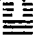
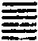

阿難如是眾生一一類中亦各各具十二顛倒猶如揑目亂華發生顛倒妙圓真淨明心具足如斯虗妄亂想。
此結前起後也言各各具者每一顛倒中各具十二顛倒也一則現起餘則冥伏言雖各各具足十二亂想究其所以皆是顛倒妙圓真心而有都無實事上約無明熏真如而成染用為十二類生之因已竟下約真如熏無明而成淨用為五十五位菩提之因也。
汝今修證佛三摩提於是本因元所亂想立三漸次方得除滅如淨器中除去毒蜜以諸湯水并雜灰香洗滌其器後貯耳露云何名為三種漸次一者修習除其助因二者真修刳其正性三者增進違其現業。
此明就染飜淨也本因即顛倒因也就本因亂想立三漸次者教其翻染成淨必從染處下手所謂當處出生隨處滅盡也故先德云影由形起響逐聲來弄影勞形不識形為影本揚聲止響不知聲是響源除煩惱而趣涅槃喻去形而覓影離眾生而求佛果喻嘿聲而求響故知迷悟一塗智愚非別是以修證佛三摩地必從本因元所亂想入也浮器喻根中所具真心本來元淨之體除去毒蜜者喻除助因刳正性也灰湯滌器者喻違現業也後貯甘露者喻得無生忍而安立聖位也云何下出漸次之名謂欲修習耳根圓通先當立此三種漸次方得證入也助因為增上緣正性是生死根本為因緣現業是根緣境緣除此三種緣則甘露寂滅法顯矣昔青原初參六祖即問云當何所務即不落階級祖曰汝曾作甚麼曰聖諦亦不為祖曰落何階級原曰聖諦亦不為何階級之有則知法無漸次漸次由人故如來觀機逗教於無漸次中強立漸次無階梯處強立階梯若是上上根人知幻即離離幻即覺何漸次之有。
云何助因阿難如是世界十二類生不能自全依四食住所謂段食觸食思食識食是故佛說一切眾生皆依食住阿難一切眾生食甘故生食毒故死是故眾生求三摩提當斷世間五種辛菜是五種辛熟食發婬生啖增恚如是世界食辛之人縱能宣說十二部經十方天仙嫌其臭穢咸皆遠離諸餓鬼等因彼食次舐其脣吻常與鬼住福德日銷長無利益是食辛人修三摩地菩薩天仙十方善神不來守護大力魔王得其方便現作佛身來為說法非毀禁戒讚婬怒癡命終自為魔王眷屬受魔福盡墮無間獄阿難修菩提者永斷五辛是則名為第一增進修行漸次。
此別釋除助因也眾生日用最切要者飲食若無飲食命不自全故依四食而住也譚子云牛可使之負馬可使之駕鷹可使之擊犬可使之守故知十二類生皆依食住而食為命根之所係故甘毒不可不擇也唯識云食以資益諸根大種心心所法能生喜樂相續執持故有四種段食者本曰摶食唐僧義淨易為段食謂一分一段之食以欲界香味觸三正消變時有資益義乃名為食觸食者謂根境識三種和合能引意識相應觸起觸對前境能生喜樂資益諸根及心心所思食者謂意識相應思與欲俱轉於可意境希望偏勝有資益義識食者謂第八識依前三種食住由前三種食緣助勢力此第八體有增勝故能執持諸根大種能與諸法為長養因有攝益義故名為食此四種食若大槩論有具不具人間段食鬼神歆觸而飽有觸食禪天思食識天識食既無形色但以識想故五辛者葱蒜韭薤興渠也興渠根如蘿蔔出土辛臭此方所無故不翻也此五辛者能發婬增恚故須斷也如是下出過天仙嫌其臭穢餓鬼舐其唇吻菩薩不來擁護魔王得其方便過惡增而福德消塵滓近而清虗遠若不斷除則日就月將漸為魔眷此初心入道者所以必欲先除也。
云何正性阿難如是眾生入三摩地要先嚴持清淨戒律永斷婬心不餐酒肉以火淨食無啖生氣阿難是修行人若不斷婬及與殺生出三界者無有是處當觀婬欲猶如毒蛇如見怨賊先持聲聞四棄八棄執身不動後行菩薩清淨律儀執心不起禁戒成就則於世間永無相生相殺之業偷劫不行無相負累亦於世間不還宿債是清淨人修三摩地父母肉身不須天眼自然觀見十方世界覩佛聞法親奉聖旨得大神通遊十方界宿命清淨得無艱險是則名為第二增進修行漸次。
此別釋刳正性也對助而言故曰正葢婬殺若固有之物不待教而自能與身俱生與性俱有實生死之正性故當刳之也無啖生氣者謂無情有生氣者尚不忍傷況有情有命者耶此亦防微杜漸之至也如高柴不折方長茂叔不除庭草皆是此意當觀婬欲如毒蛇怨賊者害法身損慧命莫不由斯勢不兩立故我不害彼彼必不害我若視如毒蛇則不敢狎視如怨賊則不敢近矣故經云使人愚蔽者愛與欲也又云但離此門出塵羅漢故以毒蛇喻之而教令觀察也寶積經云文殊言天子若人一心專精自受貪欲心發即應覺知方便散除還令寂靜云何散除應作是念此是空此不淨求此欲心生處滅處從何處來去至何所其中誰染誰愛誰為染者誰為染法如是觀時不見能染不見所染不見染事以不見故則無有取以不取故則無有捨以不捨故則無有受不捨不受則名離欲寂靜涅槃矣執身不起者七支不犯也執心不起者一念不生也斷婬則不相生斷殺則不相殺斷偷則不償宿債三業既除名清淨人修三摩地者因戒而修定也肉眼觀見十方世界者即色陰盡相後文云十方洞開無復幽暗是也按位當在初信齊小初果此當菩薩初斷見惑時也覩佛下四句即受陰盡相後文云去住自由無復留礙又云得意生身隨往無礙是也按位當在二信齊小二果宿命清淨得無艱險是想陰盡相後文云於覺明心如去塵垢一倫生死首尾圓照今言宿命清淨則是去塵垢而照見生死矣又言得無艱險者以徹通宿命若除己願力永不誤入惡趣故離生死險難惡趣也按位當在四五兩信對小三果。
云何現業阿難如是清淨持禁戒人心無貪婬於外六塵不多流逸因不流逸旋元自歸塵既不緣根無所偶反流全一六用不行十方國土皎然清淨譬如琉璃內懸明月身心快然妙圓平等獲大安隱一切如來密圓淨妙皆現其中是人即獲無生法忍從是漸修隨所發行安立聖位是則名為第三增進修行漸次。
此別釋違現業也如是清淨持禁戒人即牒上五信三果因持戒而發定慧者由欲界九品思惑已盡故心無貪婬因內無貪婬故於外六塵不多流逸而不許絕無者以根中無始虗習尚未淨盡所對之塵猶在而現業猶未違也因不下方顯忘塵盡根始違現業也謂既不流逸於外則不隨前塵所起知見而復歸元真如是則外無所入而內無所出根塵不接兩不相偶始得反欲流而全一精明至是六根對境始得不生分別如鏡照像故曰反流全一六用不行也此正行陰盡相下文云六根虗靜無復馳逸是也按位齊七信當小之四果十方下復顯忘塵盡根已後識陰盡相按位當與後三信齊也由根不接塵則世界清淨故見十方國土表裏洞徹猶如琉璃內懸明月下文云識陰若盡十方世界及與身心內含寶月如吠琉璃時圓覺所謂一世界清淨乃至多世界清淨時也由塵不交根則無所繫縛故身心快然而身量心量不等不動故曰妙圓平等獲大安隱圓覺所謂四大不動當知覺性平等不動由不動故安隱也一切如來密圓淨妙者密謂秘密深固幽遠無人能到故圓謂圓滿交徹含攝重重無盡故淨謂清淨明相精純纖塵不立故妙謂神妙一切變現皆不為礙故此即果上四德也皆現其中者謂此果德皆現是人之心也大經所謂一切法門無盡海普會一法道場中是也是人即獲無生法忍者是人指前清淨持禁戒人其功用至此則不見有少法生不見有少法滅始得不生不滅果地覺為因地心故曰獲無生忍所謂從定發慧也若此方歷代諸大祖師所證無生法忍皆此位攝此當菩薩斷思惑塵沙惑也從是漸修等者此則通指後之諸位也謂以此不生不滅為因地心然後圓成果地修證所謂先悟毗盧法界後修普賢行門故下文住以成德行以成行向以成願地以斷惑證真皆以此位為基也此答前至何漸次得修行目也。
阿難是善男子欲愛乾枯根境不偶現前殘質不復續生執心虗明純是智慧慧性明圓鎣十方界乾有其慧名乾慧地欲習初乾未與如來法流水接。
此即束前三漸次中所含十信無生法忍以顯是初乾慧孤山云所謂合十信為乾慧是也欲愛四句束前七信已斷三界思惑已盡而三界生緣逈絕無分不受後有此則因戒生定即行陰已盡之相執心二句正顯思惑盡而人空智發此當天台斷盡思惑證一切智也慧性二句束後三信正顯慧性圓明而照用徧界此牒前文識陰已盡之相正當天台斷塵沙惑頓開法眼見俗諦理成道種智此則因定發慧也然圓人本期不斷見思塵沙意在入住斷無明見佛性譬如冶鐵粗垢先去非本所期意在成器器未成時自然先落雖見先去其人無一念欣心所以者何未遂所期故圓教行人亦復如是雖非本所期斷自然先落欲習下出其所以名乾慧也由現種習三而習氣最細今言欲習初乾者是欲愛之最細習氣初得乾枯也最細習氣即斷性雖見思已盡斷性亦無而根本無明全在未與如來法流之水相接故曰乾有其慧若一入初住分破無明分證真理則與如來法流水接矣問既云行識皆盡何故復云欲習初乾未與如來法流水接答自有二說若圓人通別二惑同時頓盡便能超入金剛後心乾慧不歷階級故下文云識陰若盡則汝現前六根互用從互用中能入菩薩金剛乾慧圓明精心於中發化如淨琉璃內含寶月如是乃超十信十住十行十迴向金剛十地等覺圓明入於如來妙莊嚴海圓滿菩提歸無所得如觀音寂滅現前忽然超越世出世間獲二殊勝是也若圓人志在斷別惑而通惑先斷者便入初乾慧地歷階級而進矣問前漸次中已含十信而乾慧地復束為一位矣何故下文復開十信答前之十信但是總束圓通助正始末以為後位初心方便然圓通歷證三空實居十信此位之後別有十信名借常途義則逈別以是初住開出故。
即以此心中中流入圓妙開敷從真妙圓重發真妙妙信常住一切妄想滅盡無餘中道純真名信心住。
此明信心住即信根也此心者躡前乾慧心也中中流入者按修圓通初心雖直觀聞性不著空有是亦絕待靈心之中道而麤垢先落人法雙銷未免任運趨於圓明之空性非中道純真至此位則俱空不生前之中道於斯益純故曰中中流入蓋言中而復中順法流而深入也六根互用曰圓情器雙超曰妙開敷者如華始開也次二句明乘此心開益增進也從真妙圓者言此非同前位似妙似圓乃真妙真圓也重發真妙者使真妙者益進於妙真圓者益進於圓應是根塵互周身土重重漸廣如華正開也妙信者親見心佛眾生三無差別非同比量之信常住者堅固不動非同前位輕若鴻毛妄想滅盡者固是我想法想及非法想俱時蕩盡亦是聖凡見息因果情忘也末二句總攝前意結成信心葢純真中道非同前位兼帶趨空也以親見此理深忍樂欲故名信心乃成就之相住即常住不退也後皆傲此又此位既攝前乾慧所成而乾慧合前三漸所含十信故知此位乃究竟前之十信而抵於成就所以獨標信心住若作常途十信初心豈能當此圓妙常住妄想無餘等義乎孤山云此下十信雖與諸經十信名同而於名下皆結住名故知即是初住分開況云中道純真豈是相似位耶故知此經原始要終莫不皆用中道妙觀觀常住妙理苟不如是將何以顯此經純圓耶自此以至十迴向當起信之解行發心也。
真信明了一切圓通陰處界三不能為礙如是乃至過去未來無數劫中捨身受身一切習氣皆現在前是善男子皆能憶念得無遺忘名念心住。
念心住即念根也初二句躡前位生起圓通者謂根根塵塵周徧法界故稱一切圓通由一切圓通故陰不能覆處不能局而界不能隔因此遂能遠憶過去無數劫捨身與未來無數劫受身乃至業力所熏隨眠習氣皆現在前是人皆能冥記毫無遺失此屬宿命漏盡二通也言習氣者按唯識不出三種謂名言我執有支今言捨受多是有支即異熟識然一切之言必兼餘二若在我執位中即是種子法執位中乃種子所遺微細習影如畢陵之慢身子之瞋等又前位是深信本有佛性此位是憶念近習種性此二位所以別也。
精進心即進根也首四句躡前二位成就一精字也真精者言妙圓純真之觀力漸久故精明也發化者觀智強而能起鎔妄之力用也葢由精故化由化益精耳次二句躡念心上句正躡下句明其併前習氣鎔盡無餘皆成智慧故曰通一精明葢前位本有近習未融為一至此盡鎔為一精明智體矣次二句躡前精字加以進字而成就精進二義葢精明即菩提體亦是如如智體真淨即涅槃體亦是如如理體今以精明進趣真淨是純以如如智契如如理也永嘉云但得懷中解垢衣誰能向外誇精進此之謂與。
心精現前純以智慧名慧心住。
慧心住即慧根也上位轉惑習而成智慧此明惑盡而慧心顯現菩提之體無復妄雜矣問何故乾慧不名住而此位名住答以前云執心虗明猶有執在此云心精現前則其執渾融成化矣前云純是智慧猶帶是在此云純以智慧則日用在在皆慧并忘其是矣以用也謂識其寶而能用也識其寶而能用此慧所以名住也。
執持智明周徧寂湛寂妙常凝名定心住。
定心住即定力也前位以見心朗徹故智慧純明而此智明若無定力執持則妄念起而偏局不徧正念失而間斷不常所謂無寂之照如風中燈故曰徧寂而又曰常凝皆大定之相所謂一心不動入諸禪也此五皆言根者如果木之有根也。
定光發明明性深入惟進無退名不退心。
不退心即進力也自此以下屬五力如果木結根既久有不可拔之力用故定光發明者從定發慧也明性深入者言不住於明若磨鏡然愈磨而愈明明明不已故曰深入惟其深入有進無退故名不退也。
心進安然保持不失十方如來氣分交接名護法心。
護法心即定力也心進安然者前雖不退而勤勇無間尚涉工夫至此雖精進而不見有勤勞之相故曰安然持心至於安然則優游垣蕩永保無處矣然所保持者何物不失者又何物即諸佛法身命脉也由我保持法身命脉而不失自然得與諸佛氣分通同脗合故名護法。
覺明保持能以妙力迴佛慈光向佛安住猶如雙鏡光明相對其中妙影重重相入名迴向心。
迴向心即慧力也首句躡前定力所持覺體妙力即慧力也前雖初與如來氣分交接蒙佛慈光攝受尚有自他之分此則復以己之妙力迴佛慈光向自己心佛安住實無二種如眼眼相對心心相照心不離佛佛不離心如兩鏡相寫傳耀無盡故名迴向。
戒心住即信力也首句躡前心光密迴既獲自性天真不動佛體即安住無為毫末不漏落於有為一滲有為即名破戒是則心愈密而戒愈嚴所謂佛性戒珠永無遺失故名戒心。
住戒自在能遊十方所去隨願名願心住。
願心住即念力也首句躡前既住戒心不動之體此則漸發自在之用則無求不達無適不可故所去如願人能小心翼翼亦可行於蠻貊況住戒自在毫無勉強惡乎往而不可哉十信竟。
阿難是善男子以真方便發此十心心精發暉十用涉入圓成一心名發心住。
此明第一發心住此當起信論中信發心也真方便者即從真妙圓重發真妙也謂真如心中本來具足十心妙用以無方便終不能發今依真如方便發此十種妙心中間不容一毫雜染純是智慧其心精矣既精而心光愈顯五根五力皆悉具足而一心即十心十心即一心涉入重重本無二體總是一心圓滿成就故名發心住則知離前十心無此住體言發心者謂從一心發起十心由此十心而結心始解萬行具足下文不過推廣此十心以至究竟耳故大經云初發心時便成正覺天台解云初發心者初住名也便成正覺者八相成道也是分證果若謂已成妙覺則二住已後諸位徒施矣先所云發覺初心蓋指此耳此如中陰攬先業而成陰體也大經又云發心畢竟二不別如是二心先心難天台解云細識不二之旨龍女便成正覺諸聲聞人受當來成佛記莂皆是此位成佛之相故宗鏡云此菩提心有大勢力如獅子筋絃如師子吼如金剛鎚如那羅延箭具足眾寶能除貧苦如如意珠雖小懈怠小失威儀猶勝三乘功德舉要言之此心即具一切菩薩功德能成三世無上正覺所以華嚴廣讚此心功德無盡故六祖聞金剛經應無所住而生其心處忽然悟入遂云何期自性本自清淨何期自性本自圓明何期自性本自具足始可名真正發菩提心矣若準華嚴此菩薩緣十種法而發心所謂是處非處智善惡業報智諸根勝劣智種種解差別智種種界差別智一切至處道智諸禪解脫三昧智宿命無礙智天眼無礙智三世漏普盡智何以故欲令菩薩於佛法中心轉增廣有所聞法即自開解不由他悟故自此位至十地當菩薩斷(滅異住相)無明所謂盡聞不住覺所覺空也。
此明第二治地住也初句躡前琉璃喻智精金喻理以前妙心者即以十用所成初住之心以為基地始堪踐履從此步步脚踏實地於一切時一切處借眾生以練治心地自然出生一切善法增長大悲故名治地此如中陰乘彼業力結為境界為依止處也大經云此菩薩於諸眾生發十種心所謂利益心大悲心安樂心安住心憐愍心攝受心守護心師心導師心何以故欲令眾生於諸菩薩增長大悲故具此十心心地不治而自治矣。
心地涉知俱得明了遊履十方得無留礙名修行住。
此明第三修行住也初句躡前謂將十心履以成地然後涉歷見色聞聲處日用動靜邊則一一天真一一明了見聞不惑無有錯謬如此而遊履十方任運縱橫得無拘礙所謂百華林裡過片葉不沾身名修行住不亦宜乎此如中陰見遠如在目前所去速疾山壁不礙也大經云此菩薩以十種行觀一切法所謂一切法無常苦空無我無作無味不如名無處所離分別無堅實如此觀法何礙之有。
此第四生貴住也初句躡前大經云此菩薩從聖教生成就十法所謂永不退轉於諸佛所深生淨信善觀察法了知眾生國土世界業行果報生死涅槃又能了知三世一切佛法修集三世一切佛法圓滿三世一切佛法了知一切諸佛平等何以故欲令增進於三世中心得平等故其行如此則為如來肩所荷擔則為如來衣之所覆受佛氣分不通而通不入而入斯則秉佛遺體初托聖胎正如太子處胎貴壓羣臣故名生貴前云氣分交接猶二也此云受佛氣分入如來種幾合為一矣此如中陰與父母業同會合一處也。
此第五方便住也初句躡前親奉覺胤者謂攬佛權實二智凝結聖胎也如中陰攬赤白二渧而結凝滑等如胎已成人相不缺者謂六根圓滿具足一切方便善巧度脫眾生克肖於佛無所乏少如中陰身六根成就克肖父母也大經云此菩薩所修善根皆為救護一切眾生饒益一切眾生安樂一切眾生哀愍一切眾生度脫一切眾生令一切眾生離灾難出生死發淨信悉調伏證涅槃故名具足方便。
容貌如佛心相亦同名正心住。
此明第六正心住也初句躡前心相亦同者言心亦同佛也大經云此菩薩聞十種法心定不動所謂聞讚佛毀佛心定不動讚法毀法心定不動讚菩薩毀菩薩心定不動讚菩薩所行毀菩薩所行心定不動說眾生有量無量易度難度心定不動說法有量無量有成有壞若有若無心定不動唯其一無所動名正心住纔有一毫心動則不得其正矣故寶積讚佛偈云毀譽不動如須彌於善不善等以慈。
身心合成日益增長名不退住。
此明第七不退住也初句躡前謂內外一如也日益增長者謂亭毒涵養漸漸增長也大經云此菩薩聞有佛無佛有法無法有菩薩無菩薩有菩薩行無菩薩行菩薩修行出離不出離心不退轉聞過去有佛無佛未來有佛無佛現在有佛無佛心不退轉聞佛智有盡無盡三世一相非一相心不退轉由不動故不退也。
十身靈相一時具足名童真住。
此明第八童真住也十身者謂菩提身願身化身力身莊嚴身威勢身意生身福身法身智身也前則增長此則具有如來智慧德相但具體而微其力未充故名童真大經云此菩薩住十種業所謂身行語行意行無失隨意受生知眾生種種欲種種解種種界種種業知世界成壞神足自在所行無礙又知一切佛剎乃至一切剎中承事供養無數諸佛等由具足十種業故十身靈相亦一時具足。
形成出胎親為佛子名法王子住。
此明第九法王子住也形成是躡前位猶未顯著至此則赫然熾盛故曰出胎堪紹如來家業具有如來寶藏之分所謂從佛口生從法化生為佛長子也大經云此菩薩修習法王十種觀察之事所謂法王善巧軌度宮殿趣入觀察灌頂力持無畏宴寢乃至法王讚歎故名法王子住。
表以成人如國大王以諸國事分委太子彼剎利王世子長成陳列灌頂名灌頂住。
此明第十灌頂住也初句躡前位而具成人之德孤山曰表以成人者堪行佛事也太子世子異其文耳春秋曰會太子於首止禮曰文王世子皆天子之子也陳列灌頂者華嚴云轉輪聖王所生太子母是正后身相具足坐白象寶妙金之座張大網縵奏諸音樂取四大海水置金瓶內王執此瓶灌太子頂是時即名受王職位菩薩受職亦復如是諸佛智水灌其頂故名為受大智職菩薩彼第十法雲地名灌頂菩薩今此十住亦分得也然圓教分以來真悉有應用若論智力不無優劣故初住百佛世界現十界相利祐眾生位位竪入倍倍增勝經中所明各就一義若論一位具諸位功德則十義俱徧十住既爾餘位皆然大經云此菩薩成就十種智所謂震動無數世界照耀住持往詣嚴淨無數世界開示無數眾生觀察無數眾生知無數眾生根令無數眾生趣入令無數眾生調伏又勸學十種智所謂三世智佛法智法界無礙智法界無邊智充滿一切世界智知一切眾生智知一切法智知無邊諸佛智何以故欲令增長一切智故今曰灌頂是以智水灌頂也以一切財寶皆是子有先所出內是子所知如佛子所應得者皆已得既有成人之德可當大任故分之以政化導十方以試行道之端也十住竟○已上十信為積德之基十住為積德之漸至此位則道成德備若不度生行事是自了漢故廣行六度大作佛事故次之十行所謂恃源而往也易曰君子以成德為行又云大車以載積中不敗言其德廣而行亦廣也。
此第一施度行也大經云菩薩行不可思議與法界虗空等以菩薩學三世諸佛而修行故此菩薩為大施主凡所有物悉皆惠施其心平等無有悔悋不望果報名稱利養但為救護攝受饒益一切眾生菩薩修此行時令一切眾生歡喜愛樂隨諸方土有貧乏處以願力故往生於彼豪貴大富財寶無盡廣行財施乃至求身肉者爾時即施身肉令其歡喜如是無量眾生乞求身肉倍復歡喜復作是念此等眾生是我福田是我善友不求不請而來教我入佛法中我當不違一切眾生之心又作是念願我已作現作當作所有善根令我未來於一切世界一切眾生中受廣大身以是身肉充足一切饑苦眾生乃至若有一小眾生未得飽足願不捨命所割身肉亦無有盡以此善根得證菩提願諸眾生食我肉者亦得菩提廣作佛事如是利益眾生而無我想眾生想不見施物不見受者等由前位具足妙德浹洽於中成佛子住故睟面盎背大喜徧身今復廣行布施則近者慕其德近者懷其惠故十方隨順結名歡喜宜哉自此以至四加行當起信之解行發心也。
善能利益一切眾生名饒益行。
此第二戒度行也此以戒德利益眾生故得此名若內無德本何以利人故見其德容使人意消者內必有本矣大經云此菩薩護持淨戒於色聲香味觸心無所著亦為眾生如是宣說菩薩持淨戒時於一日中假使無量百千億那由他諸大惡魔一一各將無量百千億那由他天女皆以五欲善行方便端正姝麗傾惑人心執持種種珍玩之具欲來惑亂菩薩道心菩薩作如是念此五欲者是障道法乃至障礙無上菩提是故不生一念欲想心淨如佛唯除方便教化眾生而不捨一切智心菩薩不以欲因緣故惱一眾生寧捨身命而終不作惱眾生事菩薩自得見佛已來未曾心生一念欲想何況從事爾時菩薩應作是念一切眾生於長夜中想念五欲趨向五欲貪著五欲其心決定躭染沉溺隨其流轉不得自在我當令此諸魔及諸天女住無上戒住淨戒已於一切智心無退轉乃至云自得度令他得度自快樂令他快樂等所謂饒益眾生葢如此。
自覺覺他得無違拒名無瞋恨行。
此第三行忍度也大經云此菩薩常行忍法謙下恭敬不自害害他不自取取他但作是念我當為眾生說法令離一切惡斷貪瞋癡憍慢覆藏慳嫉諂誑令恒安住忍辱柔和菩薩成就忍法假使百千億那由他阿僧祇眾生來至其所一一眾生化作百千億那由他阿僧祇口一一口出百千億那由他阿僧祇語所謂不可喜語非善法語乃至不堪聽聞語以是言辭毀辱菩薩又此眾生一一各有百千億那由他阿僧祇手一一手各執百千億那由他阿僧祇器仗逼害菩薩如是經於阿僧祇劫曾無休息菩薩受此極大楚毒身毛皆竪命將欲斷作是念言我因是苦心若動亂則自不調伏自不守護乃至自生執著云何令他心得清淨菩薩爾時復作是念我從無始劫住於生死受諸苦惱如是思惟重自勤勵令心清淨而得歡喜善自調攝自能安住於佛法中亦令眾生同得此法等自能安住於佛法中自覺也復令眾生亦得此法覺他也一切罵辱打辱皆能歡喜忍受是無違拒也故金剛云若有我相人相眾生相壽者相菩薩於支解時應生瞋恨故知毀辱無瞋始名真忍。
種類出生窮未來際三世平等十方通達名無盡行。
此第四行進度也大經云此菩薩修諸精進所謂第一精進乃至普徧精進性無三毒憍慢終不為惱一眾生故而行精進但為斷一切煩惱惑本除一切習氣而行精進但為知一切眾生界一切眾生死此生彼一切眾生煩惱心樂境界諸根勝劣心行故而行精進但為知一切法界知一切佛法根本性知一切佛法平等性知三世平等性得一切佛法智光明證一切佛法智乃至得分別演說一切佛法句義智故而行精進菩薩如是行精進已設有人言汝頗能為無數世界所有眾生以一一眾生於阿鼻地獄經無數劫備受眾苦令彼眾生得值無數諸佛出興於世以見佛故具受眾樂乃至入於無餘涅槃得成菩提爾能否耶菩薩不以聞此語故而生一念悔恨之心但更增上歡喜踊躍等此中種類出生窮未來際者即是盡諸阿鼻眾生種類經無數劫皆令入於無餘涅槃得成菩提也三世平等者即為知三世平等性故而行精進十方通達者即為知一切法界而行精進夫種類出生是第一心盡未來際是常心三世平等即不顛倒心十方通達即廣大心四皆無盡故名之也。
一切合同種種法門得無差誤名離癡亂行。
此第五行禪度也大經云此菩薩成就正念心無散亂無有迷惑以是正念善解世間一切語言能持出世諸法言說所謂能持色法非色法言說能持建立色自性言說乃至能持建立受想行識自性言說心無癡亂於世間中死此生彼入胎出胎發菩提心事善知識勤修佛法覺知魔事離諸魔業於不可說劫修菩薩行心無癡亂此菩薩成就如是無量正念於無量劫中從諸佛菩薩善知識所聽聞正法經無量劫不忘不失心常憶念無有間斷復次此菩薩種種音聲不能惑亂所謂高大聲極令人恐怖聲乃至沮壞六根聲假使充滿阿僧祇世界未曾一念心有散亂乃至善入一切諸禪定門知諸三昧同一體性了一切法無有邊際等此中一切合同種種法門者即一念定心能持一切法也得無差誤者即聞無量法經無量劫不忘不失也良以定心不能持諸法門是為癡定於諸法門未免差誤仍是亂心今一念定心持種種法即有種種音聲不能惑亂一一分明不爽毫髮故無差誤是知癡亂俱離也。
則於同中顯現羣異一一異相各各見同名善現行。
此第六行即理事無礙智也大經云此菩薩三業清淨住無所得凡所示現無性無依住如實際超諸世間無有所依入離分別無縛著法入最勝智真實之法入非諸世間所能了知出世間法此是菩薩善巧方便示現生相此菩薩作如是念一切眾生無性為性一切諸法無為為性一切國土無相為相一切三世唯是言說乃至云佛法不異世間法世間法不異佛法佛法世間法無有雜亂亦無差別了知法界體性平等轉更增長大菩提心與一切眾生作所依處等此中同者即出世間平等法也異者即世間差別法也同中現異者平等法中現差別法也異中現同者差別法中現平等法也斯由真俗互融故名善現。
如是乃至十方虗空滿足微塵一一塵中現十方界現塵現界不相留礙名無著行。
此第七行事事無礙智也兼下三行皆是滿足智度言不但同異互融擴而充之則大小相容一多無礙如云華藏世界所有塵一一塵中現法界是也不相留礙者界入塵而界不小是小不礙大塵含界而界不大是大不礙小三祖云極大同小不見邊表極小同大忘絕境界此由無著方能如是若有一毫執著安得大小互融耶大經云此菩薩以無著心於念念中能入阿僧祇世界於諸世界心無所著於念念中見無數佛於諸佛所心無所著又於毛端徧現法界於一毛端處盡不可說不可說劫教化調伏一切眾生如一毛端處一一毛端處皆亦如是乃至不於一彈指頃執著於我起我我所想是也。
種種現前咸是第一波羅蜜多名尊重行。
此第八行究竟彼岸智也先德云明明百草頭明明祖師意是現前咸是第一波羅蜜於六度中亦唯般若最為尊重名尊重行華嚴名難得行以有智慧行行皆到彼岸故此菩薩成就難得善根於念念中能轉阿僧祇生死而不捨菩薩大願此菩薩雖了眾生非有而不捨一切眾生界此菩薩不住生死不住涅槃不住生死中流而能運此岸眾生到於彼岸安隱無畏無憂惱處不於眾生數而有所著何以故菩薩深入眾生界如法界眾生界法界等無有二無二法中無增無減故曰種種現前咸是第一波羅蜜也。
如是圓融能成十方諸佛軌則名善法行。
此第九行說法度生智也如上圓融無礙德既同於如來行亦齊於諸佛是則一言一行皆合十方諸佛軌則故名善法大經云此菩薩為一切世間天人魔梵婆羅門作清涼池攝持正法不斷佛種得四無礙辯隨諸眾生根性樂欲以廣長舌於一音中現無量音應時說法皆令歡喜是也。
一一皆是清淨無漏一真無為性本然故名真實行。
此第十行不違實相智也由全性是修故成軌則全修是性故本無為今既具此妙德出生妙行故雖萬變總屬一真大經云此菩薩成就第一誠諦之語如說能行如行能說此菩薩學三世諸佛真實語得三世諸佛無二語隨如來學智慧成就故所說所行皆是真實已上十行竟○下明十迴向良以十住之中雖皆純用中道而文中未甞顯言利生之事是則趣空之行居多十行位中方始明言度生是則出假之悲最勝此十迴向顯然悲智等運真俗互融位位願願圓滿中道此迴向法不過三處謂迴向眾生迴向菩提迴向實際也準華嚴經迴向即是發願良以有行無願行必茫然有願無行願唯虗設故行願兼資方入如來大涅槃海。
阿難是善男子滿足神通成佛事已純潔精真遠諸留患當度眾生滅除度相迴無為心向涅槃路名救護一切眾生離眾生相迴向。
此第一離相迴向與次位皆是迴向眾生也前四句躡前十行清淨無漏即純潔一真無為即精真遠諸留患即攝十行蓋十行既備則凡有作為皆無留礙故正當度生之時不見生之可度是終日有為而實無為以無為心向涅槃路名曰迴向若度生而存度相即著我人是添枷帶鎻非迴向法如南岳大師云三世諸佛一口吞盡何處更有眾生可度是真迴向也大經云此菩薩行六度時作如是願願此善根普能饒益一切眾生皆使清淨至於究竟永離地獄餓鬼畜生無量苦惱若有善根不欲饒益一切眾生不名迴向隨一善根普以眾生而為所緣乃名迴向安置眾生於無所著法性迴向菩薩如是迴向之時度脫眾生常無休息不住法相所謂救護一切眾生離眾生相也。
壞其可壞遠離諸離名不壞迴向。
此第二不壞迴向也壞其可壞者即上滅諸度相也諸離者即上離眾生也遠離諸離者即離眾生相亦遠離也結名不壞者謂不壞度生事業也合上位論之上位言雖度生而不著度生相故曰遠離此位言雖不著生相而不妨度生故曰不壞智悲雙運自他二利之中道也大經云此菩薩於一切眾生得不壞信慈眼等觀善根迴向普利眾生此則有生可度也。
本覺湛然覺齊佛覺名等一切佛迴向。
此第三等佛迴向智同佛智也已下四位皆是迴向佛道本覺湛然者謂自己本佛顯現也覺齊佛覺者謂與一切如來心精通同脗合也等一切佛迴向者我與如來寶覺真心無二圓滿也大經云此菩薩隨順修學諸佛迴向之道如是修學迴向道時見一切色乃至觸法若美若惡不生愛憎心得自在無諸過失廣大清淨歡喜悅樂離諸憂惱心意柔軟諸根清涼菩薩得是安樂之時復更發心迴向諸佛作如是念願以我今所種善根令諸佛樂轉更增勝等由諸佛如是迴向我亦如是迴向名等一切佛迴向。
精真發明地如佛地名至一切處迴向。
此第四至處迴向境同佛境也精真即本覺體發明即發揮妙用地如佛地者此表發揮自己因地心中所含無邊境界全同諸佛果地所現無量剎土也至一切處者盡佛境界之意大經云此菩薩修善根時作是念言願此善根功德之力至一切處譬如實際無處不至至一切物至一切世間至一切眾生至一切國土等願此善根亦復如是至一切諸如來所以如諸天諸供養具而為供養充滿無量無邊世界乃至三業普入一切世界以作佛事等。
世界如來互相涉入得無罣礙名無盡功德藏迴向。
此第五無盡迴向身土互融也若以世界涉如來則一毛孔中有無量寶剎莊嚴微妙若如來涉世界則一微塵內有無量如來轉大法輪得無罣礙者言世界涉如來時不礙如來即入世界如來涉世界時不礙世界即入如來名無盡功德藏者以佛身佛界各具無量莊嚴備表無盡功德故也大經云此菩薩以普賢行為根本以盡法界虗空界無邊無際無盡皆從如來智慧所生妙寶之所莊嚴所謂一切香華衣服乃至音樂如是等無量無數莊嚴之具莊嚴一切盡法界虗空界十方無量種種業起佛所了知佛所宣說一切世界乃至住此迴向得十種無盡藏所謂得見佛無盡藏見法無盡藏此皆以普賢大行願為根本華藏世界莊嚴所顯功德故云爾也。
於同佛地地中各各生清淨因依因發揮取涅槃道名隨順平等善根迴向。
此第六平等迴向也謂此身土互融無盡藏中各各出生無盡清淨因復依此清淨而證清淨果所謂物物燈明智體頭頭普賢行門如金作器器器皆金故曰平等善根也大經云此菩薩或為帝王臨御大國威德廣被名震天下執持一蓋溥蔭萬方以四攝法攝諸眾生為轉輪王一切周給或施外財或施內身迴向眾生等此即地中各各生清淨因依因發揮取涅槃道也。
真根既成十方眾生皆我本性性圓成就不失眾生名隨順等觀一切眾生迴向。
此第七等觀迴向也大經云此菩薩以淨志願菩提心力修諸善根時作是念言此諸善根是菩提心之所積集皆為憐愍一切眾生皆為趣求一切種智作是念時善根增進永不退轉菩薩以所集善根於念念中如是迴向所謂願一切眾生財寶豐足無所乏少願一切眾生成就大功德藏等如是迴向時眾生不違一切剎剎不違一切眾生剎眾生不違業業不違剎眾生思不違心心不違思思心不違境界境界不違思心世平等不違佛平等佛平等不違世平等菩薩行不違一切智一切智不違菩薩行菩薩如是迴向時得業平等報平等眾生平等三世諸佛平等前位地中各各生清淨因者則是化善根而為真根真根既成十方眾生成一圓融清淨寶覺故見一切眾生皆我本性之眾生一一隨順等觀一一圓滿成就故不遺失一眾生願一切眾生皆得成就大功德藏此常不輕所以逢人即禮拜云我不敢輕於汝等汝等皆當作佛。
此第八真如相迴向也已下三位皆迴向真如大經云此菩薩正念明了遠離迷惑專意修行深心不動成不壞業趣一切智終不退轉生勝善根修白淨法以智方便而為迴向如是一切種種門種種境種種相種種分種種行等菩薩爾時慧眼普觀所有善根無量無邊悉是趣向十力乘心之所建立皆悉迴向一切種智唯一無二乃至不著世間不取眾生其心清淨無所依止等譬如真如徧一切處無有邊際善根迴向亦復如是等此中即一切法者即彼所修世出世間諸法所謂種種境相事行等離一切相者即不著世間不取眾生其心清淨無所依止等前雖上求下化然總未出即相離相之間今併其即離而兩忘之方契真如相矣。
真得所如十方無礙名無縛解脫迴向。
此第九解脫迴向也前離即雙離名真如相若著真如相則為真如相縛故併忘其如相名真得所如若真得所如則處處皆如更有何礙哉大經云以無著無縛解脫心成就普賢身業語業意業精進自在力乃至普賢行願彌綸法界得一百五十六種甚深微細智如是則安往而不自在乎名無縛解脫者即入法界不可思議解脫也前位是理無礙此位即理事事事二無礙也。
性德圓成法界量滅名法界無量迴向。
此第十無量迴向也蓋無著獲性德之全體無礙獲性德之大用故曰性德圓成也法界量滅者良由體無不徧用無不周故舉一毛一塵皆等法界無有限量前雖如是猶在法界量裏尚未至銷其限量今則根根塵塵周徧法界則限量情忘不墮諸數故名法界無量大經云此菩薩以離垢繒而繫其頂住法師位廣行法施為諸眾生而作導首以此法施善根迴向願得修習成就增長廣大一切無礙境界等作是念言我當普於一切世界為諸眾生精勤修習得徧法界無量自在身乃至徧法界無量利益眾生善根等皆是法界量滅之意已上十迴向竟○下明四加行若據別教前三名資糧位資謂資具糧謂糧食謂所積既多所適必遠如適千里者必三月聚糧故假十住以成其內德十行以成其利他德十迴向以成其自他互融之德萬德既備可入聖域然而猶有微碍於此復立加行位自非世尊洞晳奧密孰能辯之故唯識論云現前立少物謂是唯識性以有所得故非真住唯識言少物者即微礙也此中則借別名圓名雖同而實不同也以別教之初地與圓教之初住齊故圓教初住即斷一品無明次從二住至十住各斷一品無明與別教十地齊次從初行斷一品無明與等覺齊次入二行與妙覺齊從三行已去別教之人尚不知其名字何況伏斷以別教但破十一品無明故也是知圓凡已超別聖況四種妙圓加行乎然唯識四種加行位各有能發定所發觀及所觀法今詳此經都無此義但以心佛二字對辯成四位而已故不同也。
此明加行為入地之勝進也溫陵云四十一心乾慧一信住行向各十也小乘通教皆有四加而非妙非圓故此特標妙圓則不可以尋常加行目之矣前文云欲真已非真真如性三漸次是欲真之念初起從真妙圓重發真妙是欲真之念再起至四加行是欲真之念三起至初地而欲真之麤念斷至八地而欲真之細念亦斷至妙覺而欲真最細之念永斷矣。
此明煖地也前云覺齊佛覺但是發願希求猶有覺在未能超佛是而為己心至是欲超佛見而用為己心然佛見未忘欲超而未能即超故曰若出未出喻如鑽火欲然木而未然但有煖相而已故名煖地故龍牙云學道如鑽火逢烟且莫休直待金星現歸家始到頭。
此明頂地也前云地如佛地亦是發願希求未能超己見而成佛所履至是始以己心成佛所履然己見未忘故若依而不可謂之依喻如人登高山身雖入於虗空而脚跟點地尚有微碍未能挾日月而遊八表故名頂地。
心佛二同善得中道如忍事人非懷非出名為忍地。
此明忍地也自始焉中中流入以至即以佛覺用為己心又以己心成佛所履然曰用曰成猶存二相非善得也至此則全心是佛全佛是心而不可分故曰二同而又云善得中道然謂之善得而非真得如忍事人既不懷之於心又不出諸於口是名善忍然非真忍故名忍地。
數量銷滅迷覺中道二無所目名世第一地。
此明世第一也前云善得中道雖心佛不分未忘數量至此則心佛兩融而數量始銷所所謂非心非佛也故南泉云莫認心認佛設認得是境古人喚作所知愚故馬大師云不是心不是佛不是物也至此則迷覺中道二無所目迷中道者是自己因心覺中道者是如來果智二無所目者是下不見自心上不見佛智若有迷有覺世人尚可指目不名超出今數量銷迷覺盡中道亡高出乎世人之上為世第一所謂只有天在上更無山與齊也若進而登地方名出世超乎妙覺又名出世第一也唯識論云此四種加行皆帶相故未能證實以彼空有二相未除帶相觀心有所得故非實安住真唯識理彼相滅已方得安住此中曰以曰成曰善得皆是帶相至於無所目則幾矣然未登出世之地故曰世第一直至圓滿菩提歸無所得是出世第一矣正脉云初位佛即是心次位心即是佛三位即心即佛四位非心非佛故不離心佛而四位章章矣唯識則空有二相未除此則心佛二相未盡此亦借別名圓也四加行竟○次明十地良以非住不能成德非積德不能自利非自利不能利他故於眾德既成神通已就大願已滿之後復立四種妙圓加行以淘汰情量必使心佛兩忘纖毫不立中道不存然後登地言地者謂蘊積前法至於成實一切佛法依此發生蓋地以堅實為體發生為因若據前文以果地覺為因地心則自發心住以至等覺皆屬因地究竟妙覺方為果地也問既圓教初住以至等覺皆是分斷無明分證真理何故至此復用四種加行而後入地答若以頓悟言則因該果海果徹因源初發心時便成正覺若以修證言十地既稱真修影顯地前皆是似修佛位既是真證影顯十地亦是似證是則初心究竟理雖頓同而歷位淺深序而不亂圓融行布兩不相礙矣。
此明初地也由前四種妙圓加行則心佛兩亡中道不立方得超出世間入佛真境大喜徧身名歡喜地若據唯識此菩薩斷異生性障初得聖性證徧行真如以此真如二空所顯無有一法而不在故故云覺通如來盡佛境界論中即立此地為通達位故大經云若有眾生深種善根善修諸行善集助道善供養諸佛善集白淨法為善知識善攝善清淨深心立廣大心生廣大解慈悲現前為求佛智故為得十力故為得大無畏故為得佛平等法故為淨大慈悲故為得十方無餘智故為淨一切佛剎無障礙故為一念知一切三世故為轉大法輪無所畏故菩薩以如是心即得超凡夫地入菩薩位生如來家無能說其種族過失離世間趣入出世道得菩提法住菩提處入三世平等於如來種中決定當得無上菩提菩薩住如是法名住菩薩歡喜地以不動相應故菩薩住此歡喜地念諸佛故歡喜念諸佛法故歡喜乃至云入一切菩薩平等性故歡喜等此中覺通二字是親到實證非同比知由前忍地雖曰即心即佛尚在將證未證故曰善得中道世第一地雖曰迷覺中道二無所目猶存影響未名出世至此則實證非心非佛之旨方得超出世間入佛真境故曰善得菩提自此以至妙覺當起信之證發心。
異性入同同性亦滅名離垢地。
此明第二地也前位是斷九界異性而入平等佛性故曰異性入同但始證此平等佛性尚未能忘而佛境當情亦是清淨覺心一點微垢故將此同性亦復除滅方得離垢清淨葢異性是濁邊垢同性是淨邊垢故須雙離若準唯識異性入同是離異生障而初獲徧行真如由前地生大歡喜故有悞犯三業名為邪行今斷此障證極淨尸羅遠離微細毀犯煩惱故名離垢若準華嚴性自遠離十不善業破戒之垢名離垢地。
淨極明生名發光地。
此明第三地也由前法垢已離已稱極淨故淨覺光明自然顯發所謂淨極光通達也若準唯識由破闇鈍障成就勝定大法總持能發無邊妙慧光故大經云此位菩薩修四禪四空定但隨順法故行而無所染著證得六種大神通故曰發光此即內瑩發光也。
明極覺滿名燄慧地。
此明第四地也前云明生如火始然此云明極如大火聚先德云金剛燄慧如大火聚觸著便燒一切緣影悉皆爍絕是也覺滿者所謂明極即如來也不曰慧而曰燄慧慧之至也若準唯識此菩薩破微細煩惱現行障安住最勝菩提分法燒煩惱薪慧燄增故大經云此菩薩修十法明門所謂觀察眾生界法界世界虗空界識界欲界色界無色界廣心信解界大心信解界得入燄慧地住此地已觀察三十七品菩提助道法燒煩惱薪故得大火熾然也。
一切同異所不能至名難勝地。
此明第五地也地前智名異地上智名同今淨極覺滿則同異爍絕故異同所不及也若有異可及則凡情可勝若有同可及則聖解可勝今一切異同凡情聖解皆已爍絕故不能至至且不能孰能勝哉若準唯識此地斷下乘般涅槃障以彼厭生死求涅槃有厭有求即是凡情聖解未忘所以名障此障五地無差別智故即斷也故大經云此地菩薩以十種清淨心趨入所謂三世佛法平等清淨心乃至教化一切眾生平等清淨心得入此地入此地已如實知此四聖諦等如實知一切有為法虗妄詐偽誑惑愚夫於諸眾生轉增大悲生大慈光明不捨一切眾生常求佛智此菩薩為利葢眾生故世間枝藝靡不該習所謂文字算數圖書印璽乃至戲笑談說悉善其事良由真俗二智行相相違今合令相應故曰難勝所以逈超同異故同異不能及也。
無為真如性淨明露名現前地。
此明第六地也由前凡情聖解悉已剗除則無為真體自然明露故曰現前若準唯識此位斷麤相現行障住緣起智引無分別最勝般若令現前故彼障六地無染淨道故入六地便能永斷以有染有淨皆名麤相故若準華嚴此地菩薩以十平等法而為對治所謂一切法無相故平等無體無生無滅本來清淨無戲論無取捨寂靜乃至有無不二故平等菩薩住此地則入空三昧謂自性空第一義空第一空大空合空乃至百千無相無作三昧門皆悉現前名現前地良以圓人發心即頓悟真如妙性忘情佛境然五住未破心垢未除其於真如尚屬比知豈即親證今由似修而歷真修極盡有為功行將至無為功用故於斯地真如方始顯露初得親證然真如大用當在八九兩地而八地真無功用此地方到無為始顯真如而已。
盡真如際名遠行地。
此明第七地也上地真如既已明露此則盡其邊際尋常望之而不見其涯窮之而不盡其量今則徧界徧空無不呈露不但現前已也若準唯識是斷細相現行障由前樂觀空即是細相現行入七地時便能永斷此地隨有不著修無量無功用為對治故華嚴云此地菩薩修十種方便慧起殊勝道所謂雖善修空無相無願三昧而慈悲不捨眾生雖得諸佛平等而樂供養佛雖入觀空智門而勤修福德雖盡離三界而莊嚴三界等方入七地入已入無量眾生界入無量眾生業世界網清淨國土種種差別法此地菩薩於十波羅蜜於念念中皆得具足如是乃至一切菩提分法念念中皆得圓滿以此地修無相觀念念皆入正受故得盡真如際也。
一真如心名不動地。
此明第八地也由遠行既盡其際此則全得其體言不動者由遠行而見其不動之體也以此地菩薩根身器界一塵一毛皆是真如不動之體自違現業中所獲無生法忍至此方得親證所謂徹法源底故名不動尊也若準唯識此地菩薩斷無相中作加行障令無相觀不任運起前之五地有相觀多無相觀少於第六地有相觀多無相觀少至第七地純無相觀雖恒相續而有加行由無相中有加行故未能任運現相及土如是加行障第八地無功用行入八地時便能永斷得二自在故大經云此菩薩入一切法本來無生無起無相無性為性初中後際皆悉平等無分別如如智之所入處離一切心意識分別想無所取著猶如虗空入一切法如虗空性是名得無生法忍菩薩成就此忍即入第八不動地離諸諠諍寂滅現前即捨一切功用得無功用道身口意業念務皆息住於報行即佛心菩提心涅槃心尚不現起況復起於世間之心由此菩薩本願力故諸佛勸勉然後十身相作得大自在此中一真如心亦是無生法忍也。
發真如用名善慧地。
此明第九地也前位已得真如全體此位是發真如大用此即從真體而起用也前位一塵一毛皆同真如周徧法界此則一一互攝互入即徧即包故自乾慧已來至此方結名善慧者以初證得法界無障礙智故若準唯識此斷利他中不欲行障樂修己利彼障九地四無礙解入九地時便能永斷大經云此地菩薩如實知善不善無記法行等如實知眾生心種種相又知諸根輭中勝相又知隨眠種種相又知受生種種相又知習氣種種相又知正定邪定不定相此菩薩以四無礙智演說無量阿僧祇句義無有窮盡作大法師廣度羣品應時合節故曰善慧問七行之塵界互現五向之依正互涉與斯何異答七行方有是行五向方有是願未是親證自體從體起用故不同也。
此通結前位也諸字遠則通指上位近則指四加以至九地已往二字亦是指九地已前諸位也蓋自初地親證妙真如性由是歷位修斷以至於此則真如全體大用皆悉現前而修習出世功德一切畢備故至此地方稱圓滿然又目此地為修習者正顯此位死中發活廣修諸行廣度眾生廣作佛事故又以此位為修習之始而以妙覺所證為終也。
慈陰妙雲覆涅槃海名法雲地。
此明第十地也慈心如陰妙智如雲是菩薩之因德也涅槃海是如來之果德也菩薩至此則悲智如陰如雲故隣於佛果覆涅槃海若準唯識此菩薩斷諸法中未得自在障彼障十地大法智雲及所含藏所起事業入十地時便得永斷故大經云此菩薩於兩足下及其頂上放百萬阿僧祇三千大千世界微塵數光明普照十方一切世界諸佛如來道場眾會右繞十匝住虗空中成光明網發起種種諸供養事供養於佛此大光明作如是等供養事畢復繞十方一切世界諸佛道場眾會經十匝已從諸如來足下而入爾時十方所有受職菩薩皆於金剛莊嚴臆德相中出大光明名能壞魔冤百萬阿僧祇光明以為眷屬普照十方而來入此菩薩金剛莊嚴臆德相中爾時諸佛從眉間出清淨光明名增益一切智神通普照十方一切世界從大菩薩頂上而入當爾之時此菩薩得先所未得百千三昧名為已得受職之位入佛境界具足十力墮在佛數。
如來逆流如是菩薩順行而至覺際入交名為等覺。
此十一地也如來逆流等者謂如來已先證入妙覺果海無復進取但不捨眾生倒駕慈航逆流而出此位菩薩進取未竟方趨果海順流而入也覺際入交者等覺菩薩與妙覺佛分劑正齊但順逆不同耳瓔珞經云等覺照寂妙覺寂照即其義也溫陵云十地菩薩利生與如來同但所趨逆順與如來異蓋如來逆流出同萬物菩薩順流直趨妙覺已至覺際故名入交與佛無聞故名等覺即解脫道前無間道也然初乾慧云欲習初乾未與如來法流水接此云覺際入交正與如來法流水接矣一曰未接一曰入交則知後乾慧不異初乾慧但以交不交分為兩位耳此當起信斷生相無明時所謂空覺極圓空所空滅也。
此結顯得慧也言從初乾慧以至等覺至等覺而始得金剛心中初乾慧地也問何故初乾慧地至等覺而始獲答以乾慧之體始終無二故然必至此而後稱始獲者以初之乾慧譬初生之月後之乾慧若望夜之月然初生之月與望夜之月實無有二初生之月陰氣尚多望夜之月陰氣盡而光明熾盛極其圓滿耳然不可謂初生之月異望夜之月也此乾慧心亦復如是初之乾慧已用金剛慧斷異相無明已得一分光明顯露如初生月今至等覺亦用金剛後心斷生相無明始得光明圓滿如望夜月若以易卦喻初乾慧如復卦一陽初復也十住如臨卦十行如泰卦十迴向如大壯卦十地如夬卦至等覺之乾慧如乾卦至此則陰盡而陽體全矣故前云以不生不滅為因地心然後圓成果地修證言圓成者謂圓滿成就也既稱妙覺為圓成則知初住已後皆分證矣通議云始終乾慧二地從古解者不一學者難憑但未觀佛法源頭耳以九界眾生因三種流名五住煩惱感二種生死五住者欲愛住地色愛住地無色愛住地見一切住地無明住地三種流者謂欲流有流無明流前四煩惱為欲流有流感分段生死此在初信已斷無明住地名無明流感變易生死至佛果乃斷今經約生死染緣重在流字故在六根則曰流逸奔境返妄觀行則曰返流旋一入流亡所專約三種流相以為真妄之本也今首楞嚴大定總名金剛如幻三昧故上文云是種種地皆以金剛觀察漸次深入是知從初乾慧即用金剛觀照發心之初志在直斷生相無明何待等覺後心耶以此證之則初乾慧地乃用金剛心任運先斷欲有二流出分段生死故曰欲愛乾枯根境不偶現前殘質不復續生如澄濁水沙土自沈清水現前名為初伏客塵煩惱其無明流從入信已來即志斷之但無明深厚故歷五十四位直至等覺後心生相無明纔乾以此無明在觀心斷故曰是覺始獲金剛心中初乾慧地五住究盡二死永亡無明流至此纔乾乃入妙覺出變易生死所謂去泥純水名為永斷根本無明此明文的證也是則位有始終觀無先後以力行深淺為次耳。
如是重重單複十二方盡妙覺成無上道。
此明如來極果也首二句結因位盡下二句明證果位也一名一位曰單一名多位曰複十二者謂乾信住行向煖頂忍世地等妙也十一為因後一為果以此乾慧至等覺而始獲至妙覺而始盡獲則尚有得在盡則歸無所得矣此當天台斷盡無明證一切種智也然此智稱妙豈能加於初之乾慧哉即是磨礱初乾慧心至於光明瑩徹之極以顯其妙耳言無上道者謂圓頓初心雖與如來同一覺道但約位次則後後勝於前前直至等覺尚名有上至此則更無有上故曰無上前世第一地是世間無上此則出世間無上也由前十二類生窮十二變為一旋復故修因證果亦有單複十二也問觀音圓通章中以生住異滅顯因心此又以生住異滅顯果覺者何也答前以修道言故以因心為始此以證果言故以果覺為終正顯即因之果果不離因即果之因因不離果也。
是種種地皆以金剛觀察如幻十種深喻奢摩他中用諸如來毗婆舍那清淨修證漸次深入。
此總明諸位工夫也種種地者即指上因地與果地也以用也金剛者即金剛寶覺斷惑之利器也十種深喻者觀一切業如幻一切法如燄一切身如水中月妙色如空妙音如響諸佛國土如乾城佛事如夢佛身如影報身如像法身如化以不可取捨一切空故此言不但觀有為法皆空即觀無為亦如夢幻故曰深喻言以十種深喻觀察而以金剛慧斷其惑也或觀師云修習空華萬行宴坐水月道場降伏鏡裏天魔證得夢中佛果奢摩他即自性本定用此觀察是為微密觀照也毗婆舍邪即如幻三摩鉢提也言此金剛寶覺更非別物即是二卷中之微密觀照三卷中之三摩鉢提用此觀察故能從性起修從修得證漸次深入也至此方結歸得成菩提妙奢摩他三摩禪那。
阿難如是皆以三增進故善能成就五十五位真菩提路作是觀者名為正觀若他觀者名為邪觀。
此歸重初心欲人下學而上達也吳興云三增進者即三漸次也由前云是名增進修行漸次又云從是漸次隨所發行安立聖位五十五位者自乾慧以至十地皆是入菩提家之路若等覺妙覺是菩提家矣作是下欲人捨邪而歸正也吳興曰須知圓教之外三乘所修皆屬邪觀邪之一字對勝揀劣為邪非邪非叛道之邪也證道分已竟自初卷至此方完無始菩提涅槃元清淨體一科下明結經分。
爾時文殊師利法王子在大眾中即從座起頂禮佛足而白佛言當何名是經我及眾生云何奉持佛告文殊師利是經名大佛頂悉怛多般怛羅無上寶印十方如來清淨海眼亦名救護親因度脫阿難及此會中性比丘尼得菩提心入徧知海亦名如來密因修證了義亦名大方廣妙蓮華王十方佛母陀羅尼呪亦名灌頂章句諸菩薩萬行首楞嚴汝當奉持。
此經一往自破心顯見破因緣自然破三科七大使人悟此不生滅性次自審因心推業本指耳根一門為修行方便使人修此不生滅性次又廣明五十五位真菩提路使人證此不生滅性然則如來欲人悟者悟此修者修此證者證此但不知此不生滅者喚作何物令人頂戴奉持不失故世尊與之安名曰大佛頂以無相可見故諸佛所證最上頂法故曰大白傘葢覆被一切眾生故含育如來妙寶王剎故曰無上寶印三科七大一法所印故持此而號令人天降伏魔外故曰清淨海眼圓照法界不遺一物故此約理智立名也亦名救護親因親即阿難因即摩伽以無畏光明秘密神呪能脫諸難令彼得因心而證果海故此依功用立名也亦名如來密因修證了義是諸佛所修所證正因正果無不圓滿故此約人法立名也亦名大方廣妙蓮華王以體相用三清淨本然周徧法界因果交徹無不自在故即此一名華嚴法華二題合見十方佛母陀羅尼呪者出生一切諸佛總持一切諸法故此約顯密立名也亦名灌頂章句者此經從灌頂部中流出故諸菩薩萬行首楞嚴者以修此定於一心中具足萬行究竟堅固故此約教行立名也當知此經顯密理智教行人法功用無不包容以具有如是種種功德故有種種名目汝當謹守奉持不可失也。
說是語已即時阿難及諸大眾得蒙如來開示密印般怛羅義兼聞此經了義名目頓悟禪那修進聖位增上妙理心慮虗凝斷除三界修心六品微細煩惱。
此敘當機獲葢也密印者秘密心印也般怛囉即大白傘葢也此敘前文重為說呪也兼聞了義名目者即前五種名也頓悟禪那修進聖位增上妙理者即前頓悟無生法忍從此安立聖位一階一級漸漸增進而極於妙覺也心慮虗凝者言至此則正助修證之行始終之位顯密之義無不了然毫無疑惑故心虗慮凝而六品欲漏已斷得證二果也溫陵曰修道所斷之惑小乘於三界分九地地地各九品斷欲界前六品而證二果斷後三品而證三果斷上二界各九品而證四果阿難備聞全經方證二果是表多聞之劣不如進修無漏之勝結經分竟○此下明第二大科無始生死根本也自初卷至此雖真妄互明其正意皆是發明無始菩提涅槃元清淨體不生滅性為本修因而證不生不滅之果此下則廣明生滅為因而感生滅之果也由初卷云一切眾生從無始來種種顛倒業果自然如惡叉聚故有別明諸趣一科又云諸修行人不能得成無上菩提乃至別成聲聞緣覺及成外道諸天魔王及魔眷屬故有詳辨魔境一科此皆因地不真果招紆曲是初修心人最緊極要故詳明之令人披砂揀金不誤認瓴甋為璠璵也。
即從座起頂禮佛足合掌恭敬而白佛言大威德世尊慈音無遮善開眾生微細沉惑今我今日身心快然得大饒益世尊若此妙明真淨妙心本來徧圓如是乃至大地草木蝡動含靈本元真如即是如來成佛真體佛體真實云何復有地獄餓鬼畜生修羅人天等道世尊此道為復本來自有為是眾生妄習生起。
此問七趣生起之因也慈音無遮者教誨不倦悋也善開者巧示也微細沉惑指前五十五位所斷者言此微細沉惑雖不能頓斷一超直入然聞此慈音令我快然亦得斷除六品思惑得大饒益也世尊下正請意謂真淨妙心本來周徧圓滿至一切處則一切無情有情咸與如來同一圓融清淨寶覺云何復有種種異類雜形各各差別耶然此雜形復從何出為即清淨體中本來自有耶抑亦無始妄想習氣之所發起耶此問亦類清淨本然云何忽生大地之義。
世尊如寶蓮香比丘尼持菩薩戒私行婬欲妄言行婬非殺非偷無有業報發是語已先於女根生大猛火後於節節猛火燒然墮無間獄琉璃大王善星比丘琉璃為誅瞿曇族姓善星妄說一切法空生身陷入阿鼻地獄此諸地獄為有定處為復自然彼彼發業各各私受惟垂大慈開發童蒙令諸一切持戒眾生聞決定義歡喜頂戴謹潔無犯。
此詳問地獄也梵語泥犂此云地獄又名不自在謂彼罪人為獄卒阿旁之所拘繫不自在故寶蓮香比丘是犯婬謗戒而招現報生報者琉璃是犯殺戒善星是犯妄語戒而墮者溫陵曰琉璃匿王太子廢父自立挾宿嫌誅釋種取萬二千釋種諸女刖劓耳鼻截斷手足推之坑塹佛記其七日當入地獄王泛海以避水中自然燒滅言宿嫌者舊恨也(佛在世時波斯匿王新紹王位使臣求親迦毗羅國釋種家時摩訶男婢出一女顏貌端正送與匿王後生一子名曰琉璃及年八歲與梵志子好苦詣摩訶男家時迦毗羅國新起一講堂欲請如來供養爾時琉璃大子至講堂即陞師子之座時諸釋種見之罵曰此婢生物敢於中坐琉璃出語梵志好苦曰此諸釋種辱我至此若我紹位汝當告我後琉璃紹位好苦以前事告之琉璃集兵往伐釋種佛告比丘往昔之時此羅閱城有捕魚城時世饑儉彼村有池多魚時城多人向於池中捕魚食之池中有二種魚一名麩二名多舌各懷報怨時有一小兒在岸見魚跳而喜以杖打魚頭爾時羅閱人者今釋種是麩魚者琉璃王是多舌魚者梵志好苦是小兒者即我身是以是因緣琉璃王殺釋種懷宿嫌也)善星是佛堂弟妄說法空撥無因果生陷者以業力強連肉身陷下也如此地獄為復本來自有定處為復因彼造業而各各私受其報也。
佛告阿難快哉此問令諸眾生不入邪見汝今諦聽當為汝說阿難一切眾生實本清淨因彼妄見有妄習生因此分開內分外分。
此總明內外二分為七趣之因也由愜佛本懷故稱快哉犯戒破禁皆是邪見悉非正因故因問而令眾生不入邪見也實本真淨者言七趣之體實是本來真淨無諸妄染由迷此真淨心遂起妄見因有妄見復生妄習言妄見者即煩惱現行妄習者即業習氣由惑業為因遂分內外二分言內分者情也由情動於中從軀殻起念故言外分者想也由想緣於外從勝境起念故前以情想為十二類生之根本此以情想為七趣之原由雖情想不同勝劣有異總之皆屬一虗妄耳。
阿難內分即是眾生分內因諸愛染發起妄情情積不休能生愛水是故眾生心憶珍羞口中水出心憶前人或憐或恨目中淚盈貪求財寶心發愛涎舉體光潤心著行婬男女二根自然流液阿難諸愛雖別流結是同潤濕不升自然從墜此名內分。
此別釋內分也以情愛是眾生分內所有故曰內最初對境起著為愛染躭戀不捨為妄情情積不休而為水遂無往而不流矣是故下驗其愛為欲流也憶珍羞而水出想前人而淚盈貪財寶而體潤著行婬而流液皆愛染之所致也阿難下明愛水之必墜言所愛之物雖各各不同然皆令固結不解則愛心無異以情愛屬水故流下而凝結所以下墜不升為三塗之因也。
阿難外分即是眾生分外因諸渴仰發明虗想想積不休能生勝氣是故眾生心持禁戒舉身輕清心持呪印顧盻雄毅心欲生天夢想飛舉心存佛國聖境冥現事善知識自輕身命阿難諸想雖別輕舉是同飛動不沉自然超越此名外分。
此別釋外分也以勝氣非眾生分內所有故曰外渴仰者謂慕聖境如渴之仰水也發明虗想者即天外真人之想也勝氣者是浩然之氣也最初聞勝境而希望為渴仰戀極而神馳不斷為虗想想積而益增為勝氣遂無往而不達矣是故下驗其想之為勝氣也持禁戒而舉身輕清持呪印而顧盻雄毅欲生天而夢想飛舉存佛國而聖境冥現事知識而自輕身命皆勝氣之所召也阿難下明勝氣之必升言所想之境雖各各不同然皆令輕舉不沉則勝氣無異以勝氣屬火故輕舉而上升所以超越不墜而為上界之因也。
阿難一切世間生死相續生從順習死從變流臨命終時未捨煖觸一生善惡俱時頓現死逆生順二習相交。
上明情想為七趣因此下明情想所招果也生從順習死從變流者言生時所造善惡二業皆順意作為無有違逆及其將死未捨煖觸時則平生所順習者皆變為流類而現乎前如善心起而寶殿生惡念興而火城現故一生善惡俱時頓現所謂遊魂為變也生順死逆二習相交者言作惡人生順而死必逆作善人生逆而死必順如作惡人生時愛女色之樂皆任情縱意及其死也縱有金車玉女現前皆拂其意若作善人生時逆女色之樂而堅守戒禁及其死也則金幢玉女以迎之皆順其意故善惡二習逆順相交也此二句當在煖觸之下為順顯識經云大藥白佛言世尊眾生捨身云何生諸天中乃至云何生地獄中佛言眾生臨終時福業資者棄本視得天妙視見六欲天見身動搖見天宮殿等乃至若睡不睡安隱捨壽將捨壽時天父天母同至一坐天母手中自然華出天母見華顧謂天父慶子之歡時將不久天母遂以兩手搖弄其華弄華之時命便終盡無相之識棄捨諸根持諸根事棄捨諸境持諸境業棄捨諸界持諸界事遷變果報猶如乘馬棄一乘一如日引光如木生火識資善業速托華內天父天母同坐視之甘露欲風吹華七月寶璫嚴身光耀炫煥天童朗潔現天母手若眾生積不善根命終之時作如是念我今此身棄捨父母親知所愛甚大憂苦見諸地獄及見己身應合入者見足在上頭倒向下又見一處地皆純血見此血已心生味著緣味著心便生地獄腐敗惡水臭穢因力識托其中譬如糞穢臭處因蟲生故知心作天堂心作地獄。
純想即飛必生天上若飛心中兼福兼慧及與淨願自然心開見十方佛一切淨土隨願往生情少想多輕舉非遠即為飛仙大力鬼王飛行夜叉地行羅剎遊於四天所去無礙其中若有善願善心護持我法或護禁戒隨持戒人或護神呪隨持呪者或護禪定保綏法忍是等親住如來座下。
此明想多情少者生逆而死順也純想生天者即卜居於天而非遊於天也三界諸天皆想心所感其間有兼修六度而心想佛國者亦得隨想往生如想念西方而生西方之類輕舉非遠者竪不越四天橫不出輪圍也一情九想為飛仙二情八想為大力鬼王三情七想為飛行夜叉四情九想為地行羅剎遊者謂暫時遊行非久住也其中者指上四類綏安也住如來座下者轉惡心而為護教神如八部之類也。
情想均等不飛不墜生於人間想明斯聰情幽斯鈍。
均等即五情五想也不飛不墜者上不在天下不在地參於天地之兩間然而上智下愚情想均等聰鈍皆具由彼想明益進則聰者愈聰遂成上智若情幽日進則鈍者愈鈍遂成下愚若使高明者日用在暗昧處用心此心亦日就暗昧則轉聰為鈍若使昏鈍者在高明處用心此心亦日就高明則轉鈍為聰故關尹云升魂為貴降魄為賤輕魂為明重魄為暗不明不暗者魂魄半之故知人所具者皆半明半暗若暗者習明則反暗為明明者習暗則反明為暗此聰鈍智愚之所由分也。
情多想少流入橫生重為毛羣輕為羽族七情三想沉下水輪生於火際受氣猛火身為餓鬼常被焚燒水能害己無食無飲經百千劫九情一想下洞火輪身入風火二交過地輕生有間重生無間二種地獄純情即沉入阿鼻獄若沉心中有謗大乘毀佛禁戒誑妄說法虗貪信施濫膺恭敬五逆十重更生十方阿鼻地獄循造惡業雖則自招眾同分中兼有元地。
此明情多想少者生順而死逆也六情四想為橫生若情重而想稍輕者為毛羣情輕而想稍重者為飛禽七情三想為餓鬼溫陵云俱舍說大地最下有金水風三輪有八寒八熱地獄在三輪之上此文說沉下水火風輪又似地獄在三輪之下疑此所指非地下三輪乃地獄三輪也言水輪火際即寒獄第八也受氣猛火謂受火氣以為身故常被火燒或得水飲亦化為火故曰水能害己真際曰八情二想生有間獄九情一想生無間獄有間即十八獄無間即八無間獄也下洞火輪即八熱獄也身入風火二交過地者交過猶交勝也在火輪而又近風輪是風火交盛之地而身處此其苦可知純情則墜入阿鼻即大無間獄也溫陵曰謂受罪苦具身量劫數壽命五者皆無遮間名五無間此惟情業最重墜入至劫壞乃出若兼謗大乘等則此劫雖壞更入十方阿鼻無有出期以謗法者令無窮人生邪見故言毀佛禁戒者如寶蓮香比丘尼之類誑妄說法者言善星妄說法空之類無功而貪人信施之謂虗無德而當人恭敬之謂濫乃至犯五逆十重者皆十方阿鼻之種族也可不畏哉循造下結答由前問云此諸地獄為有定處為各私受故云雖是自招私受在眾同分中兼有元地元地即定處正言別造同受也故知七趣皆以情想為本若不著於情則三塗空不著於想則天堂空情想俱空在雖人間宛然淨土若七趣有元地淨土亦有元地故靈辯云此心能壞一切能成一切故一切法皆是佛法心作天心作人心作鬼神畜生地獄皆心所為好惡皆由心要生亦得要不生亦得若了心外無法即無一法當情一切皆是解脫所以云阿鼻依正常處極聖之自心諸佛法身不離下凡之一念。
此結略說以起詳明也前明情想為七趣因七趣為情想果下明十習為三塗因三塗為十習果言自業所感者謂非天造地設亦非人與是自作自受故曰應觀法界性一切唯心造。
云何十因阿難一者婬習交接發於相磨研磨不休如是故有大猛火光於中發動如人以手自相摩觸煖相現前二習相然故有鐵床銅柱諸事是故十方一切如來色目行婬同名欲火菩薩見欲如避火坑。
此詳明婬習因果也一者下先陳日用所習之因如人下次設喻以驗知其實二習下三明死後所感之報下皆放此交者結搆之始發者臨時之動接者染心會合磨者貪求觸樂舒王曰婬習研磨不休自耗其精則火界熾然於其生也尚有痟渴內熱等疾則其死也見大火宜矣二習者業習種習也發於相磨業習也研磨不休種習也由此二習交熾遂感此苦報也故知昔之錦衾角枕是今日鐵床之基昔之交相摟抱是今日銅柱之媒因果相符不爽毫髮果若道念同乎情念則婬心化為智火如烏芻瑟摩者何鐵床銅柱之有哉如來名之為火者言不染則已染則必至焦頭爛額菩薩避之如坑者言不墮則已墮則喪身失命毒哉火也是如來之所訶菩薩之所避願世世生生勿自投於火坑也。
二者貪習交計發於相吸吸攬不止如是故有積寒堅氷於中凍冽如人以口吸縮風氣有冷觸生二習相陵故有吒吒波波羅羅青赤白蓮寒氷等事是故十方一切如來色目多求同名貪水菩薩見貪如避瘴海。
此詳明貪習因果也貪謂吸取於有有具染著為性計謂算計如握牙籌鑽李核簡髮而櫛數米而炊之類貪吸屬水吸之不已結水而成氷故見堅氷凍冽之境陵侵奪也由二習相凌故受吒吒羅羅之報吒吒波波羅羅皆忍寒聲青赤白蓮皆凍色若使努力向前打開自己寶藏則取之無禁用之不竭何用交計哉言貪水者若今之貪泉飲之使人生貪故謂多求之人愈得愈為不足必溺死而後已也言瘴海者如南方瘴癘之氣觸之即死甚言可驚避也貪利如此餘貪亦然。
三者慢習交陵發於相恃馳流不息如是故有騰逸奔波積波為水如人口舌自相綿味因而水發二習相鼓故有血河灰河熱沙毒海融銅灌吞諸事是故十方一切如來色目我慢名飲癡水菩薩見慢如避巨溺。
此詳明慢習因果也慢者恃己於他高舉為性生苦為業謂有慢於德有德心不謙下由此生死輪轉無窮受諸苦故陵欺壓也恃倚也憍慢者必有所倚如倚財倚勢倚名位文學智勇才能乃至一技一藝必倚恃其所長而後陵人傲物故曰發於相恃也殊不知是法平等無有高下一慢生而舉趾高心亦蕩矣於是若後波之陵前波奔馳不息故感騰逸奔波之境所謂平地波濤也如人以舌根絞其上齶則口水津津流出血河等事皆所感之報癡水者西土有水飲之則癡若此方之貪泉也合論云滔天之浸出於涓滴岑樓之木發於毫末其始於甚微而終於不可禦故聖人於所習多慎之習性之難除雖親奉世尊如阿難者有婬習於說法會常諦視女人如畢陵迦婆蹉有慢習呼恒河神女為小婢是皆果位聖人其折伏婬慢尚有餘習況眾生乎故所習不可不慎也。
四者瞋習交衝發於相忤忤結不息心熱發火鑄氣為金如是故有刀山鐵橛劍樹劍輪斧鉞鎗鋸如人[銜-金+缶]冤殺氣飛動二習相擊故有宮割斬斫剉刺槌擊諸事是故十方一切如來色目瞋恚名利刀劍菩薩見瞋如避誅戮。
此詳明瞋習因果也瞋習者於苦苦具增恚為性惡行所依為業謂瞋必今身心熱惱起諸惡業不善性故交衝者彼此搪揬也諺云一言不合怒氣相衝是也忤逆也由彼此相逆則動氣而生瞋火以瞋火而鑄氣金故先見刀山劍樹之境殊不知能隨順眾生即是隨順覺性瞋火若除氣金不鑄則無所容其刃矣宮者去其勢割者劓其鼻斬斫者謂斷首截臂也剉刺者剉其骨而刺其肉利刀劍者觸之即死犯之即傷也。
五者詐習交誘發於相調引起不住如是故有繩木絞校如水浸田草木生長二習相延故有杻械枷鎻鞭杖撾棒諸事是故十方一切如來色目奸偽同名讒賊菩薩見詐如畏豺狼。
此詳明諂習因果也詐即小隨之諂為罔他故矯設異儀險曲為性誘哄賺也調者謂以諂言調弄勾引之謂狙詐之人設機巧而誘彼入其綣繢若繩縛木禁索絞校錮使無所脫故感繩木絞校之事校枷也易曰荷校滅耳是也然狙詐設巧誘人必浸潤已久令其中心悅服然後引其入於殻中正如水之浸田草木滋長也若使日用直心直口則如來果海可以直進矣延引也讒賊者謂以讒言中傷人故喻之如賊豺狼能卜事出必有獲狙詐誘人亦百發百中故畏之。
六者誑習交欺發於相罔誣罔不止飛心造姦如是故有塵土屎尿穢汙不淨如塵隨風各無所見二習相加故有沒溺騰擲飛墜漂淪諸事是故十方一切如來色目欺誑同名劫殺菩薩見誑如踐蛇虺。
此詳明誑習因果也誑者為獲利養矯現有德詭詐為性邪命為業誣者說有為無指空為有也罔者欺其不知不見而謾之也飛心造姦者不動聲色而羅網四張作諸姦惡人不覺知也由彼志在謾人故感塵土不淨以遮沒之令彼亦不見也因以誑語陷人故感沒溺以誑語撮弄人故感騰擲以誑語或天或淵故感或飛或墜也豈知不誑不妄不自欺皆是成佛之正因哉言劫殺者以遭此必傷命故言蛇虺者以遭此必解腕故。
七者怨習交嫌發於銜恨如是故有飛石投礰匣貯車檻甕盛囊撲如陰毒人懷抱畜惡二習相投故有投擲擒捉擊射拋撮諸事是故十方一切如來色目怨家名違害鬼菩薩見怨如飲酖酒。
此詳明怨習因果也怨即恨也由忿為先懷惡不捨結怨為性熱惱為業嫌憎也銜包藏也由包藏恨心故感飛石投礰等事匣貯即匣牀也車檻即囚車也甕盛如請公入甕之類囊撲者以囊貯人而撲殺之如史記始皇囊撲兩弟是也相吞者謂銜恨之人唯欲囓其肉而啖之也不知視怨如親不念舊惡銜恩而不銜怨者是出世之正因也違害鬼違昔正理暗中害人鬼中最惡鬼也鴆酒者鴆鳥最毒以翼毛劃酒飲之即死。
八者見習交明如薩迦耶見戒禁取邪悟諸業發於違拒出生相反如是故有王使主吏證執文籍如行路人來往相見二習相交故有勘問權詐考訊推鞠察訪披究照明善惡童子手執文薄辭辯諸事是故十方一切如來色目惡見同名見坑菩薩見諸虗妄偏執如臨毒壑。
此詳明見習因果也見者於諸諦理顛倒推求染慧為性招苦為業此見行相差別有五一薩迦耶此云身見謂執身有我種種計著二邊見於一切法執斷執常三邪見邪悟錯解撥無因果四見取非果計果如以無想為涅槃五戒禁取非因計因如持牛狗戒為生天因由彼順邪反正故曰發於違拒彼亦一是非此亦一是非故曰出生相反由彼不肯從人就正故感王使證執文籍以正其是非也如行路人來往相見者狹路相逢無處逃避也權詐者用權變詐術以誘其出言也推鞠者推詳窮鞫以審其是非也照明者在業鏡臺前令其照明無所隱諱也豈知離四句絕百非是如來之正見哉名見坑者謂墮此見永不能出也毒壑者諸毒之中見毒最深能陷法身故以壑喻。
九者枉習交加發於誣謗如是故有合山合石碾磑耕磨如讒賊人逼枉良善二習相排故有押捺搥按蹙漉衡度諸事是故十方一切如來色目怨謗同名讒虎菩薩見枉如遭霹靂。
此詳明枉習因果也枉者情本無罪而加之以罪理本不曲而強謂之曲是以氣燄降壓人也由逼害良善損惱於他心無悲愍是害所攝誣謗者謂以本無之事加謗也合山者兩山相合無逃遁也由倚聲勢而枉逼良善故感合山合石之境排謂推排押捺者謂心不服強押之而遏捺也搥按者謂意不甘強按之而搥擊也蹙漉者謂攢其手足壓之而漉其血也衡謂稱錘度謂衣尺謂稱其輕重量其短長也豈知即使罪得其情尚欲哀矜而寬宥之況無罪而枉逼哉讒能傷人故曰虎雷能擊人故曰霹靂。
十者訟習交諠發於藏覆如是故有鑒見照燭如於日中不能藏影二習相陳故有惡友業鏡火珠披露宿業對驗諸事是故十方一切如來色目覆藏同名陰賊菩薩觀覆如戴高山履於巨海。
此詳明訟習因果也訟即覆習由覆發訟故覆者於自作業恐失利養隱藏為性悔惱為業諠者諍競也發於藏覆者謂攻發陰私故成訟也由平生不能隱惡揚善而反吹毛求疵攻人之惡而自匿其惡故感鑒見照燭之境在業鏡火珠前陰私畢露無所容覆矣所謂攻人之惡者人亦攻之也陰賊者暗賊也人雖不知是賊而實是賊也戴山履海謂戴愈重而溺愈深也已上十習貪瞋慢見四根本煩惱婬即貪一分攝怨即瞋一分攝詐即小隨之諂與小隨之誑皆貪一分攝枉亦瞋一分攝訟即小隨之覆貪癡一分攝此十雖因果並彰而所重在因故曰十因此十種因十方諸佛洞見其根十方菩薩謹潔無犯唯佛菩薩說無七趣可也除此言無即是妄說法空矣今時有等增上慢禪大言自肆兒視如來奴視菩薩以為言不足信亦可畏哉。
此下詳明六交報也前十二類生中言一因中具足眾因此言一果中具足諸果前明一根返源六根解脫此明一根造業六根受報也六識造業者引滿二業皆六識所招也惡報從六根出者以六根屬第八業識故若麤而言之造業者是六識而受報者是業識究而言之總是業識自作自受以由業識引起六識故前文審業本云誰作誰受而卒云自作自受也。
云何惡報從六根出一者見報招引惡果此見業交則臨終時先見猛火滿十方界亡者神識飛墜乘煙入無間獄發明二相一者明見則能徧見種種惡物生無量畏二者暗見寂然不見生無量恐如是見火燒聽能為鑊湯洋銅燒息能為黑煙紫焰燒味能為焦丸鐵糜燒觸能為熱灰爐炭燒心能生星火迸灑煽鼓空界。
此舉眼根交報也見報招引惡果者謂眼識與意俱識造業招引眼根受惡果也此見下是臨終所見之境見覺屬火故感猛火徧十方界乘紫煙而墜獄此與乘飛龍而御天者反也成論云極善極惡皆無中陰所以直入六交皆言直入就重言也發明下是入獄所見之境由彼因中不能反觀唯是流逸奔色故在獄中元與人間見明見暗無異由人間明目張膽造諸惡業了無畏心故在此中徧見惡物生無量畏言惡物者如鐵蛇銅狗劍樹刀山牛頭阿旁之類由在人間暗地瞞人作諸惡業恬不介意故在此中寂無所見生無量恐葢畏生於境而恐藏於心也如是下詳明交報因中耳所聽者或鼓樂絃歌嬌聲豔語今為見火所燒耳中但聞鑊湯爐炭之聲因中鼻所齅者龍涎麝臍華香酒氣今為見火所燒鼻所聞者皆為黑煙紫燄因中舌所甞者膏梁美味適悅其口今為見火所燒舌所甞者皆成焦丸鐵糜因中身所觸者吳姬越豔柔軟細滑今為見火所燒身所觸者化為熱灰爐炭因中心所思者俛仰天地盤旋九州今為見火所燒心所思者俱成星火迸灑空界此由不能返見循元流逸奔色之報所謂生順死逆也。
二者聞報招引惡果此聞業交則臨終時先見波濤沒溺天地亡者神識降注乘流入無間獄發明二相一者開聽聽種種閙精神愗亂二者閉聽寂無所聞幽魄沉沒如是聞波注聞則能為責為詰注見則能為雷為吼為惡毒氣注息則能為雨為霧灑諸毒蟲周滿身體注味則能為膿為血種種雜穢注觸則能為畜為鬼為糞為尿注意則能為電為雹摧碎心魄。
此詳明耳根交報也聞聽屬水故臨終時先見波濤沒溺天地降注乘流等者謂神識乘流而入於獄也此於大浸稽天而不溺者異矣開聽者耳有所聞也聽種種閙者謂耳中但聞音聲嘈雜波濤洶湧一切不可意聲令精神愗亂而無主閉聽者謂一無所聞令幽魄沉沒而無覺以因中責人則明恕己則昏故受報時亦聞責罪詰情之事因中鼓其盛氣喑嗚叱咤瞑目裂眥故聽水注於見火化為雷吼為惡毒氣因中唾霧迷人含沙射影故聽水注息時則化為雨霧為毒蟲周遍身體翻成己害因中所嗜矦鯖禁臠三[烈-列+難]八爼珍羞之味今聽水注味皆聞臭腐膿血雜穢之物因中觸體者孌童季女氣息香潔今為聽水所注皆為畜鬼糞尿因中作威用勢出其不意而加害人使人措手不及今為聽水所注化為雷雹摧心碎魄此由不能反聞自性流逸奔聲之報也。
三者齅報招引惡果此齅業交則臨終時先見毒氣充塞遠近亡者神識從地湧出入無間獄發明二相一者通聞被諸惡氣熏極心擾二者塞聞氣掩不通悶絕於地如是齅氣衝息則能為質為履衝見則能為火為炬衝聽則能為沒為溺為洋為沸衝味則能為餒為爽衝觸則能為綻為爛為大肉山有百千眼無量咂食衝思則能為灰為瘴為飛砂礰擊碎身體。
此詳明鼻根交報也鼻息屬氣具出入息吸則從上而入呼則從下而出故臨終時覺得識神從地湧上又從上而墜下也通聞者謂鼻有所齅而被臭穢之氣熏極鼻根使心擾亂也塞聞者謂鼻一無所聞故氣掩不通悶絕於地而無所知覺也由因中恃虗氣以衝人故行處皆通今即衝本根皆質礙而不能行矣質謂質礙履是足之所依自不能行者也因中恃見火而害人今息衝見火而火愈熾故為火炬而自燒無所躲避因中恃聽之聰利而無所不達今氣衝聽水其閉則為沒溺寂無所聞而生恐通則為大洋沸海作波濤之聲而生畏因中以滋味為厭飫為爽口今息衝其味皆成爛壞所謂神奇化為臭腐也孤山曰通俗文云魚敗曰餒羮敗曰爽因中恃氣以利刀劍觸眾生肉四分八裂為醢為脯以肥己身今息衝其觸則為綻裂為腐爛為大肉山而為無量眾生咂食所謂喫半斤還八兩也因中恃氣瞞心昧己暗裏中人使人不覺今息衝思則為灰瘴砂礰擊碎身體所謂出乎爾者反乎爾也此皆不能反息循元流逸奔香之報也。
四者味報招引惡果此味業交則臨終時先見鐵網猛燄熾烈周覆世界亡者神識下透掛網倒懸其頭入無間獄發明二相一者吸氣結成寒冰凍冽身肉二者吐氣飛為猛火焦爛骨髓如是甞味歷甞則能為承為忍歷見則能為然金石歷聽則能為利兵刃歷息則能為大鐵籠彌覆國土歷觸則能為弓為箭為弩為射歷思則能為飛熱鐵從空雨下。
此明舌根交報也舌根屬兌兌為金因中為此舌根用諸羅網網諸禽獸以滋口腹故臨終時先見鐵網周覆世界而神識則從上而下故誘網倒懸其頭而直入無間獄也吸氣從外入者屬水故結成寒冰吐氣從內出者屬火故飛為猛火因中為此味故食噉生命令彼忍痛受苦故歷甞亦承忍歷苦也為此味而用火炮炙今味金歷見火為流金石不可食矣為此味故以刀剖割故味金歷聽則為利兵刃而反自害為此味故籠取禽獸故味金歷息則為大鐵籠彌覆國土為此味故用弓弩以觸禽獸今味金歷觸為弓弩以自射為此味故懸想飛禽從空而下故味金歷思則熱鐵從空而下此由不能旋味循元流逸奔味之報也。
五者觸報招引惡果此觸業交則臨終時先見大山四面來合無復出路亡者神識見大鐵城火蛇火狗虎狼師子牛頭獄卒馬頭羅剎手執鎗矟驅入城門向無間獄發明二相一者合觸合山逼體骨肉血潰二者離觸刀劍觸身心肝屠裂如是合觸歷觸則能為道為觀為廳為案歷見則能為燒為爇歷聽則能為撞為擊為剚為射歷息則能為括為袋為考為縛歷甞則能為耕為鉗為斬為截歷思則能為墜為飛為煎為炙。
此明身根交報也身根所對是觸因中有男女身分之樂觸故臨終時有大山來合之苦觸而所見者皆鐵城火蛇等也離合皆身家之觸故合觸感合山逼體而離觸則感屠裂肝心也此身為五根之身因中為此身而奔走道途閒遊園觀故身根歷觸則能為道為觀為廳為案道趣獄路觀獄王門闕兩觀也廳案皆治罪之處亦身根所依處也為此身而觸色故今觸目所見者皆燒熱不堪見之觸為此身而觸聲故歷聽皆撞擊刺射不可聞之觸剚插刃於肉射插箭於身也為此身而觸息故歷息皆括袋考縛不可通之觸括袋猶括囊謂結其口而不令吐氣也考縛謂繫其身而不容轉動也為此身而觸味故歷甞則為耕鉗斬截不可口之觸為此身而攀緣故歷思則為墜飛煎炙不可意之觸以思則或升或降或熱惱故此由不能反身自修流逸奔觸之報也。
六者思報招引惡果此思業交則臨終時先見惡風吹壞國土亡者神識被吹上空旋落乘風墮無間獄發明二相一者不覺迷極則荒奔走不息二者不迷覺知則苦無量煎燒痛深難忍如是邪思結思則能為方為所結見則能為鑒為證結聽則能為大合石為冰為霜為土為霧結息則能為大火車火船火檻結甞則能為大呌喚為悔為泣結觸則能為大為小為一日中萬生萬死為偃為仰。
此明意根交報也意為主無明風所自出故臨終時先見惡風吹壞國土而神識被無明風吹入虗空旋從空落乘風而入無間此與馭風而行者異也不覺者謂迷極不知道路故荒亂而奔走不息不迷則覺知無量煎熬苦痛難忍葢心無方所莫知其鄉今邪思一結故有方向處所因中掩不善而著其善故邪思結見而為證見使無所隱其惡心火結聽水故使流者結為大石熱者化為氷霜明者化為土霧心火結息為火車火船火檻者車船檻皆載物之器氣所化也氣能載物故心火燒舌根則能為呌喚為悔為泣以痛苦難忍號天扣地無及矣心火結觸則為大小生死偃仰者葢邪思所觸翻覆無定故結觸亦不可定也此由不能反思自咎流逸奔法之報也問何故一根作業而五根皆徧受答以六根造業時性中相知故報亦相通用中相背故諸根各別唯識之理信其不誣此六交報皆是不思議業力熏變而業力甚深尤不可測唯佛眼洞明其端倪實非思議心所能知也若以因果對論則真毫末不爽故宗鏡云十因既作六報寧亡皆是一念惡覺心生顛倒想起對境作因成之假隨情運相續之心不以智眼正觀遂陷凡夫業道雖則一期狥意罔思萬劫沉身是以一切如來同宣審宜刻骨十方菩薩皆懼實可驚心者也。
阿難是名地獄十因六果皆是眾生迷妄所造。
此結前妄業皆是迷真實心而循業發現非實有也若果識得自心則大地無寸土況地獄乎。
若諸眾生惡業同造入阿鼻獄受無量苦經無量劫六根各造及彼所作兼境兼根是人則入八無間獄身口意三作殺盜婬是人則入十八地獄三業不兼中間或為一殺一盜是人則入三十六地獄見見一根單犯一業是人則入一百八地獄由是眾生別作別造於世界中入同分地妄想發生非本來有。
此明因果重輕也同造者謂此六根十因具足於一切時無不同造此則極重入無間大地獄而受苦為極長故經無量劫六根各造者亦是六根具足十因但前後異時故曰各也及彼所作兼境兼根者或兼一根一境各造或兼二根二境各造乃至三四等此罪次輕於前入八無間獄若身口意三根唯造殺盜婬三因餘不兼涉稍輕於前入十八獄泥犁經云火獄有八寒獄有十或是十八鬲子獄三業不兼者謂具殺盜之二而缺一婬或字影略具有九句一身口犯殺盜殺婬婬盜或身意犯殺盜殺婬婬盜或口意犯殺盜殺婬婬盜也此又次輕於前入三十六獄見見者吳興作能見所見單境單根於殺盜婬各犯一業或身殺身盜身婬或口殺口盜口婬或意殺意盜意婬此又次輕於前入一百八獄由是下結別作同受別作者謂各各私造也入同分地者其業是同故感同分獄也由前問云此之地獄為是本來自有為是眾生妄習生起故結答云是妄想生非本來有嗚呼地獄之苦比之人間牢獄更萬億倍乃恬不知畏而甘心造業自墮其中何愚癡之甚也或謂虗談三世報應妄說六道輪迴者不亦可憐愍哉莊生曰為不善乎顯明之中者人得而誅之為不善乎者杳冥之中者鬼得而誅之真可畏哉。
復次阿難是諸眾生非破律儀犯菩薩戒毀佛涅槃諸餘雜業歷劫燒然後還罪畢受諸鬼形若於本因貪物為罪是人罪畢遇物成形名為恠鬼貪色為罪是人罪畢遇風成形名為魃鬼貪惑為罪是人罪畢遇畜成形名為魅鬼貪恨為罪是人罪畢遇蟲成形名蠱毒鬼貪憶為罪是人罪畢遇衰成形名為厲鬼貪慠為罪是人罪畢遇氣成形名為餓鬼貪罔為罪是人罪畢遇幽為形名為魘鬼貪明為罪是人罪畢遇精為形名魍魎鬼貪成為罪是人罪畢遇明為形名役使鬼貪黨為罪是人罪畢遇人為形名傳送鬼阿難是人皆以純情墜落業火燒乾上出為鬼此等皆是自妄想業之所招引若悟菩提則妙圓明本無所有。
此躡前地獄罪畢而入鬼趣也非謗也破犯也既謗戒而復破戒也犯菩薩戒者但破而不謗毀佛涅槃者謗佛而兼謗法也諸餘雜業即十因也戒為眾生出苦之具佛為眾生拔苦之師法為眾生盡苦之地謗此三種即名斷佛種性其罪特重故入地獄而歷劫為業火燒然俟其地獄業空然後受鬼形而為鬼問若爾則地獄受苦者尚非鬼身是誰受報答此是眾生業識身隨識變現直待此業識身盡方受鬼身入鬼趣爾梵語閃多此云鬼梵語閉戾多此云餓鬼以多劫不聞漿水之名故又云被驅役使名鬼恆為諸天處處使役常馳走故又云有希求名鬼謂彼餓鬼恆從他人希求飲食活性命故若於下詳明鬼趣愛染生情情始乎貪故十習因先以貪言之葢好德者視金玉如瓦礫若多求之人即視糞土亦如黃金由彼輕身愛物而貪畜珍異吝著不捨故其餘習附奇物而成形如附金玉芝草而為精為怪故曰怪鬼好德之人心如磐石了不可動唯好色者觸情流轉故其餘習附風成形而為魃鬼或東或西隨風不定也以魃鬼是亢陽所致故詐習之人唯以甘言魅惑前人故其餘習遇畜成形而為魅鬼若狐精猿精現美色以媚人是也怨習發於銜恨故其餘習附毒虫以成形為蠱毒鬼以毒人若南方有妖術令人成蠱病者此鬼主之瞋習發於相忤憶念舊惡刺心入骨俟其勢衰以圖報故其餘習遇衰成形為疫癘鬼若今行瘟行瘧之類是也慢習發於相恃由內無實德虗驕恃氣以傲人故其餘習遇氣成形而為餓鬼以餓鬼無飲食充腹唯存懨懨氣息故誑習發於相罔昧良心而瞞人壓人終身處於暗昧之地故其餘習遇幽為形而成魘鬼猶在暗裏壓人葢寤者不能欺壓而昧者尚能欺壓也見習發於交明殊非正見亦是邪明故其餘習附精靈而成魍魎鬼由彼見地不真杳冥恍惚即為鬼物亦似有如無也枉習發於誣謗成人之惡然彼胸中明知是枉不過強彼承認故其餘習附明成形為役使鬼由彼明了故為天神役使也訟習發於交諠結黨羽以相執證故其餘習附人成形為傳送鬼環師所謂附巫祝而傳吉凶者也良以因中結黨訐露人之陰私以傳遞人故為鬼亦附人而以陰私告人也阿難下結妄純情者若據前文唯阿鼻為純情九情一想生無間八情二想生有間今言純情者舉重以該輕也業火燒乾者情屬水今以業火燒乾情水則地獄因窮果盡故生鬼趣也此等皆是妄業所招妙圓心中本無是事所謂了即業障本來空未了應須償宿債。
復次阿難鬼業既盡則情與想二俱成空方於世間與元負人怨對相值身為畜生酬其宿債物怪之鬼物消報盡生於世間多為梟類風魃之鬼風銷報盡生於世間多為咎徵一切異類畜魅之鬼畜死報盡生於世間多為狐類蟲蠱之鬼蠱滅報盡生於世間多為毒類衰厲之鬼衰窮報盡生於世間多為蛔類受氣之鬼氣銷報盡生於世間多為食類綿幽之鬼幽銷報盡生於世間多為服類和精之鬼和銷報盡生於世間多為應類明靈之鬼明滅報盡生於世間多為休徵一切諸類依人之鬼人亡報盡生於世間多為循類阿難是等皆以業火乾枯酬其宿債傍為畜生此等亦皆自虗妄業之所招引若悟菩提則此妄緣本無所有如汝所言寶蓮香等及琉璃王善星比丘如是惡業本自發明非從天降亦非地出亦非人與自妄所招還自來受菩提心中皆為浮虗妄想凝結。
此躡前鬼業盡而生畜生趣也情想俱空者但空阿鼻之純情無間之九情一想有間之八情二想餓鬼之七情三想此皆業火燒乾尚留六情四想為潤生而生毛群羽族中與元負人詶償宿債也梵語底栗車此云畜生畜謂畜養謂彼橫生稟性愚癡不能自立仗他畜養故物怪下詳明諸畜昔因貪習而為物怪之鬼故所著之物銷而鬼命亦盡隨其餘習生於世間多分為梟類梟為不孝鳥生食父母及其附塊為梟雛雛復食其父母皆大怪事故前云和合怪成八萬四千食父母想因貪色之習而為風魃之鬼以報災故鬼業盡而隨其餘習生為咎徵咎徵者凶事之先驗如商羊舞水江豚拜風之類因貪惑之習而為魅鬼鬼業盡而復為狐類作妖媚以惑人因怨習而為毒鬼鬼業盡而復生毒類奮咀螫以害人葢魅多憑狐故卒為狐蠱集於毒故終為毒皆餘習所使也因瞋習而為厲厲業盡而為蛔葢昔依人而作癘瘧今依藏而銷飲食雖是餘習亦由至暴而化為至柔因慢習而為餓鬼鬼業盡而生食類者以空腹高心人所切齒皆欲寢其皮而食其肉故卒為食類所以謙為至德也因詐習而為綿幽魘鬼鬼業盡而復為服類者以作鬼常從暗中欺魘人故為牛馬驢騾明中為人服乘也見習遇精為魍魎鬼鬼業盡而復為應類如社燕寒鴻應節而至亦明見之餘習也枉習遇明為役使鬼鬼業盡而復為休徵如祥麟瑞鳳以報禎祥亦貪明餘習也訟習貪黨而依人為鬼鬼業盡而復為循類者由彼昔循順人今雖在異類亦馴擾可畜若鷄犬猫猴之類是也阿難下總結三塗也本自發明者言此三塗惡業皆是自己發明非天造地設亦非人與元是自作自受故知實無一法外來皆是妄想凝結所成如水之成水耳。
復次阿難從是畜生酬償先債若彼酬者分越所酬此等眾生還復為人反徵其剩如彼有力兼有福德則於人中不捨人身酬還彼力若無福者還為畜生償彼餘直阿難當知若用錢物或役其力償足自停如於中間殺彼身命或食其肉如是乃至經微塵劫相食相誅猶如轉輪互為高下無有休息除奢摩他及佛出世不可停寢。
此躡前畜生業盡而復人形也鬼之為畜以六情四想為潤生詶償宿債債畢即當兩無交涉若使詶償越分則此等眾生復以情想均等為潤生復生人中而反徵其剩負徵如徵稅之徵剩餘也言復索其所負之餘債也若彼負剩之人善業力勝或兼有福德而處富貴則就人中償其剩負或遭竊取或遭劫奪之類若善業不勝福德不兼無所償地復轉為畜生以詶剩負阿難下復明負債易償負命難償也謂此人若反償餘直為彼負重致遠售其錢以償或耕田耘地役其力以償償足則停若使既用其錢得其力而復殺其身食其肉則生生遞相食噉如汲井輪互為高下無有了期若非自己得道諸佛出世則終不能釋此怨對也願諸仁者當以慈心當加愛護不宜過用其力尤不宜貪口腹以傷其生不負如來叮嚀苦口。
汝今應知彼梟倫者酬足復形生人道中參合頑類彼咎徵者酬足復形生人道中參合異類彼狐倫者酬足復形生人道中參合庸類彼毒倫者酬足復形生人道中叅合狠類彼蛔倫者酬足復形生人道中參合徵類彼食倫者酬足復形生人道中參合柔類彼服倫者酬足復形生人道中參合勞類彼應倫者酬足復形生人道中參於文類彼休徵者酬足復形生人道中參合明類彼循倫者酬足復形生人道中參於達類阿難是等皆以宿債畢酬復形人道皆無始來業計顛倒相生相殺不遇如來不聞正法於塵勞中法爾輪轉此輩名為可憐愍者。
此明畜生業盡而復人形也梵語摩菟沙此云人謂於六趣中能止息煩惱故人即止息義又人者忍也謂於世間或違或順能安忍故貪物為怪為梟梟復為頑者心不測德義之經為頑總是不識仁義不知廉耻毫無倫理不可化而為善者言參合者帶畜生之餘習而參雜混合於人中也魃鬼為咎徵復生愚類者由本於貪婬溺愛不明事事皆成過咎故為咎徵雖復人形猶然愚癡昏鈍事事不得精明經云使人愚蔽者愛與欲也魅鬼為狐狐復為庸者昔為狐媚雖復人形唯是曲情飾貌搖尾乞憐以諂世求容不能卓然自立所謂因人成事碌碌庸人也蠱鬼為毒毒復為狠者即是蜂目豺聲剛愎自大甘心奮毒以螫人不自知其非者也癘鬼為蛔蛔復為微者蛔以衰氣附物今物為微賤之人雖親附人人不齒錄者也餓鬼為食食復為柔者由傲物而為人切齒轉為食類故雖復人形無丈夫氣不能奮發委靡不振之徒也魘鬼為服服又為勞者由宿生負重致遠僕僕不休今亦被人驅役為牛馬走勤劬不息所謂勞力者事於人也魍魎為應應復為文者由宿昔亦有聰明知見不得其真故墮為魍魍今為文類者只是小有情才通文解義與人應接不失其序亦有可觀而已非經天緯地之文也役使為休徵今復為明者由宿習托明成形復為明類亦是有應世一隙之明而已非有輝天鑒地之大明也傳送為循循復為達者由宿昔循順人心今亦諳練世故通達人情而已非能通達一切也據上十種則知人道參乎想明者十三合乎情幽者十七所以昏愚頑鈍者多文明特達者少向上者少而下流者多也然此界為五趣雜居故究其用心則人趣中五趣皆有復形者不止畜生一類如天竺僧耆域晉惠時入洛陽諸比丘作禮域指支法淵曰此菩薩從羊中來又指竺法興曰此菩薩從天中來又僧曇翼生時脅有雉毛故名翼因宿生聽法華經得解雉身故然則人中諸類皆有不止一類如富貴而慈善者似天中來聰明而蕭散者似仙中來兇恨而剛愎者似修羅中來貧賤而常凍餒者似餓鬼中來頑癡而無知識者似畜生中來常牢禁而囚首垢面者似地獄中來夫種類不同勝劣各異則知來路定非一處今則偏就畜生一道復形者說以見人身難得而袈裟一失人身尤難復也故裴公序圓覺云鬼神沉幽愁之苦鳥獸懷獝狘之悲修羅方瞋諸天正樂可以整心慮趣菩提唯人道為能耳人而不為吾末如之何也已讀此寧不惕然自警耶阿難下總結可憐以警人也言復形者正言往昔在人道中作三塗業受三塗報報盡而重復人形此皆從無始無明障心煩惱障意不愛物命恣情殺噉以為活計故劫劫生生詶償宿債債盡而復形人中反徵其剩雖得人身若不遇如來出世不聞如來正法令其轉殺為慈則此人身不久復入三塗為鬼為畜矣蓋其得人身也甚難失人身也甚易如來所以目此輩為真可憐憫者。
阿難復有從人不依正覺修三摩地別修妄念存想固形遊於山林人不及處有十種仙阿難彼諸眾生堅固服餌而不休息藥道圓成名地行仙堅固草木而不休息藥道圓成名飛行仙堅固金石而不休息化道圓成名遊行仙堅固動止而不休息氣精圓成名空行仙堅固津液而不休息潤德圓成名天行仙堅固精色而不休息吸粹圓成名通行仙堅固呪禁而不休息術法圓成名道行仙堅固思念而不休息思憶圓成名照行仙堅固交遘而不休息感應圓成名精行仙堅固變化而不休息覺悟圓成名絕行仙阿難是等皆於人中鍊心不修正覺別得生理壽千萬歲休止深山或大海島絕於人境斯亦輪迴妄想流轉不修三昧報盡還來散入諸趣(前五行字作平聲讀後五行字作去聲讀)。
此從人道進修而入仙道也說文云仙者遷也老而不死遷入山也仙趣有處不別開者人道攝故次於天者不持戒故無定慧故前三塗業皆以十習為因初得人身猶帶十種餘習今此仙趣則與十種無干矣第此一趣亦是厭畏無常希求常住而不得其道故錯解修習為可惜若洞賓遇黃龍而棄飄摵琴不亦幸哉從人者謂從人道進修也不依正覺修三摩者不依如來正教以不生不滅元清淨體為本修行也別修妄想者謂執五蘊身有性可修有命可接可令長生久住世間不知此身元是妄想凝結而成縱留世間八萬劫終落空亡也存想固形者言雖有十種不同而存想固形是其總訣言存想便是用諸妄想非銷落諸念者可比言固形便是妄認色身非究竟堅固之比也山林人不及處即深山人跡不到之地若此方洞天福地是也阿難下正列諸仙有十種前三是外修後三是內修堅固服餌者謂以服餌固形若此方服秋石紅鉛之類但能駐頹齡不能輕舉故曰地行若西域之阿私陀此方之彭籛是也殊不知甘露漿禪悅食金牛飯雲門餅一飽可以忘百饑也堅固草木謂食草木而固形若此方[(歹*又)/食]黃精蒼术松栢茯苓菖蒲之類由久服身輕即能飛舉故曰飛行若毛公毛女之類殊不知阿伽陀藥觸之則根結皆消隨往無礙服之則萬苦盡除壽命無量也堅固金石者謂鍊金石之藥服之固形如鍊五金八石養砂接汞九轉大還之類化道者變白石而為黃金化凡身而為仙骨故能遊行世間所向無礙若呂洞賓何仙姑之類殊不知打開自己寶藏證此不壞之身遊戲神通淨佛國土無處不在豈待化道成而遊行哉故洞山心丹訣云吾有藥號心丹煩惱爐中煉歲年知伊不變胎中色照耀光明徧大千開法眼覩毫端能變凡聖剎那間要知真假成功用一切時中煅煉看亦無滅亦無起森萬羅像皆驅使不論泥土但將來入此爐中無不是此即從上佛祖真丹也堅固動止者謂一動一止皆守氣以固形莊生所謂純氣之守老子所謂綿綿若存用之不勤是也氣精圓成者謂精化氣氣化神神化虗故能挾日月御飛龍而遊於四海之表名曰空行若此方列子御風之類殊不知不依氣息不依形色不依地水火風者是真空行也堅固津液者謂[口*敕]津嚥液以固形也潤德圓成者謂顛倒陰陽使水升而火降精既完固形亦光潤肌膚若雪顏貌如童不食五糓不交世欲與天相似故曰天行若姑射神人之類殊不知自己性水真空周徧法界貫徹十方其津液涎沫皆與香水海一脉流通不待固精而後成也堅固精色者謂食日月之光華吸雲霞之精色以固形也吸粹圓成者吸粹既久則塵滓日去清虗日來故能貫金石蹈水火略無妨礙若五通仙之類殊不知自己光明照天照地六根門頭隨處貫徹不待吸粹而後通也堅固呪術者以呪術之力堅固其形也謂持呪既久凝神不動亦得成道西域多傳此呪於井中持誦三年自能從井飛出故名道行不知悉怛多般怛囉是轉凡成聖之呪心不以此為道非正道也堅固思念者如存想頂門繫心氣海以固形也如仙書初繫心臍輪下透尾閭升夾脊乃達泥洹以衝頂所謂夾脊雙關透頂門然此思憶所成彼亦謂之迴光返照故曰照行豈知不思善不思惡而元明清淨之體圓照法界哉堅固交遘者謂取坎填離以固形也感應圓成者謂以坎男離女匹配夫妻彈指之頃兩相感應便能產藥而成丹丹成而上昇九天蓋人身有一點真精即先天太乙之元精老子所謂其中有精之精廣成所謂無搖汝精之精一得此精立時成道故曰精行殊不知識精元明清淨之體一受成形同行同正不曾相離乃棄而不顧而別求太乙之元精以交遘非妄想而何堅固變化者謂觀變化以固其形也此觀世間皆悉如幻悟通化理留形世間若劉根左慈之類甚至移山倒水改易四時此仙道之絕行也昔老成子學幻於尹文先生先生告之曰有生之氣有形之狀盡幻也造化之所始陰陽之所終者謂之生死窮數達變因形移易者謂之幻化知幻化之不異生死始可學幻矣吾與汝皆幻也何須學哉老成子歸用尹文之言深思三月遂能存亡自在飜校四時冬起雷夏造水飛者走走者飛終身不著其術故世莫傳焉此雖知幻化為絕行然不知幻化之所自出者絕對待為絕行也阿難下結妄別得生理者謂不達自己金剛寶覺亘古亘今真常不變却在匡廓裏別求延生之理壽千萬歲豈知此長僅足勝短譬如蕣華之於松栢蟪姑之於冥靈雖修短不同豈真不死耶故黃龍斥為守屍鬼玄沙呼為魂不散死人此等亦在輪迴數中以不知性本無生命非妄立而執此為長生久視之道故也若於此中得遇聖師幡然改轍亦可進入妙三摩地若固守不捨仙報一盡猶然改頭換面墮異類中且夫非想天人壽八萬劫而一旦報終還受飛狸之身況神仙壽止千萬尚未及四空天之一晝夜而眾人匹之不亦悲乎故學人當憂聞道之不早勿憂年壽之不永也仲尼云朝聞道夕死可矣至哉言乎近見羨長年者悉是一種愚癡富貴人求住人間長享欲樂若果長生可求欲樂可久則秦皇漢武當不速死富貴之習迷心如此真可發一笑。
阿難諸世間人不求常住未能捨諸妻妾恩愛於邪婬中心不流逸澄鎣生明命終之後鄰於日月如是一類名四天王天。
此明欲界第一天也天者自在義又光明照耀義又云天者顛也首出庶物義天有三謂欲界色界無色界也欲界天自須彌腰頂以至空居共有飲食婬欲睡眠具足三欲故號欲天其男女嫁娶妻妾亦如人間但諸天人皆無骨肉亦無大小便利不淨身放光明無別晝夜報得五通形無障礙是知天趣為界內極尊也言諸世間人者亦是從人道修而入於天道也不求常住者亦是不依不生滅心為本修因而以十善為本修因希求世樂無盡五欲為果此人雖持不婬戒而婬有正邪自己妻妾為正婬他人妻妾為邪婬此人但無邪婬尚有正婬也言心不流逸者言不但身不犯邪婬而心亦無一念犯也澄鎣生明者以欲念有時心不亂動故愛水澄鎣意地生白命終時捨肉身而受天身所居報土在須彌腰隣日月宮名四天王天以山腰四面有持國增長廣目多聞各據一面各護一洲故此但邪婬心不流逸便能澄鎣生明則知違現業中清淨持戒心不流逸十方國土皎然清淨一切密圓淨妙皆現其中類可見矣人道之流而為地獄三塗者婬習為首也人道之昇而為上界諸天者伏婬習為首也人道之昇而成聖成賢者斷婬習為首也婬習之為害不翅如怨賊毒蛇戒之哉戒之哉。
於己妻房婬愛微薄於淨居時不得全味命終之後超日月明居人間頂如是一類名忉利天。
此明欲界第二天也言此人不但邪婬不流即自己妻房亦不多流逸或於清淨獨居之時間有念起不得全味比之前人已超一倍故命終後高昇一倍生須彌頂名忉利天忉利此云三十三帝釋所統之界此上二天名地居猶未離地故然此二天形交成婬與人無別但風氣一泄欲漏便除非若人間有不淨流溢也。
逢欲暫交去無思憶於人間世動少靜多命終之後於虗空中朗然安住日月光明上照不及是諸人等自有光明如是一類名須燄摩天。
此明欲界第三天也言此人不逢欲境前婬念不起即逢欲境唯暫交一過更無追戀此於靜居已得全味故於欲心動少靜多倍勝於前故命終後朗居空界問空居既無地界宮殿皆何所據答七寶琉璃與大地無異但欲下時即虗豁無礙例如人間大地聖賢天鬼皆能上下虗豁無礙當知萬法虗妄業力使然故虗實並現昧者誠未達也此天較須彌更高一倍故日月光不及上照唯自有身光互相照耀耳須燄摩此云時分環師謂以蓮華開合為晝夜是也正法念經云此天人或一百一千共聚一蓮華鬚同坐不隘不窄以善業故自業力故此天唯摟抱成婬不交遘矣。
一切時靜有應觸來未能違戾命終之後上升精微不接下界諸人天境乃至劫壞三灾不及如是一類名兜率陀天。
此明欲界第四天也一切時靜者言動靜之間全無婬念已勝動少靜多又一倍矣但有極得意之境必可應之觸自來強逼未能無心不應猶順從之故命終之後生知足天能於五欲生知足故上昇精微等者是指彌勒內院言此天有內院外院總五十重每一重有五百億天宮內則四十有九外則一也彌勒菩薩所處大摩尼殿居其中焉此則無漏報土是為別報天若五那含之寄居四禪也以此內院是補處菩薩寄居之地即外院不得窺其堂奧況下界諸天乎故曰精微而不接下界也縱使劫壞三禪而此內院三灾不及亦未嘗壞以是聖人得後智所現故上生經云今此天主名曰彌勒者是也已具三品九類行者念念發弘誓願得生彼處以無漏力三灾不及今言三灾不及者通敘內外院也蓋外院由第九品中一分不精進者所生之處生七日後彌勒菩薩放光雨華引入內院小摩尼殿尋為說法俾發起精通力故然後引之令入內院二院之外又有業報一天乃有漏業果所成是為總報天也修十善業者得生彼處以有漏果故三灾可壞是雖俱同一天然以總報望外院尚如仙凡之隔況內院乎此文或先言外天而後兼內院譯者過於省文耳不然此天何幸以少欲劣功而遽護超三禪之勝報哉。
我無欲心應汝行事於橫陳時味如嚼蠟命終之後生越化地如是一類名樂變化天。
此欲界第五天也前有應觸尚有應心此人即有應觸橫陳於前亦無應心了無滋味如嚼蠟然此又勝前一倍故命終時生越化地言越化者謂能超越下天又能自化樂具也名樂變化者此天以笑為婬欲故樂其自所變化也言橫陳者謂橫列於前也如司馬相如好色賦曰華容自獻玉體橫陳又古詩云迴眸百萬橫自陳皆此義也。
無世間心同世行事於行事交了然超越命終之後徧能出超化無化境如是一類名他化自在天。
此明欲界第六天也無世間心者言此守戒人心希上界了無一念世間情欲但同世間權作夫婦至於交時不但全然無味抑且了然超越毫無沾染此又勝前一倍故命終後超出化無化境化即第五無化即下四天也名他化自在者諸欲樂境不勞自化皆由他化而自在受用耳此天以相視為婬欲故益勝下天。
此總結也動是單指欲心躁動世人為欲所動若奔流逸火醉象狂猿騰躍馳實莫能控御今能漸制以至靜故曰出動尚未至於真無心跡而不交故總名欲界自此已下直至阿鼻皆欲界攝謂之五趣雜居地。